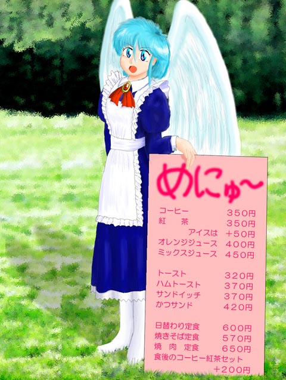
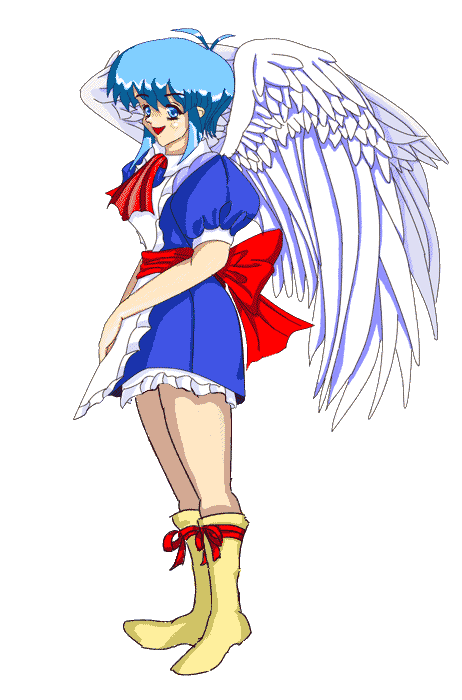

妖精的日常生活
第１１話 ウェイトレス？
作：ジャージレッド
絵師：南文堂様 ＆ もぐたん様
−＝−＝−＝−＝−＝−＝−＝−＝−＝−＝−＝−＝−＝−＝−＝−＝−＝−＝−＝−＝−＝−＝−
※ 前回までのあらすじ
異世界の妖精に人間の身体を召喚されてしまい、代わりに妖精少女の身体にされてしまった突然妖精少女の長谷川幹也（みきや）君改め長谷川美姫（みき）ちゃん。召喚後３日目にして初登校？ 予想通りクラスのみんなに可愛がられちゃいます♪ そして一段落したお昼どき、美姫ちゃんが所属している園芸部の部長と副部長がやってきた！？ 何やら謎の計画が妖精少女の美姫ちゃんを巻き込む予感が……。詳しくは『妖精的日常生活 第１０話 初登校？』までの各話をお読み下さい。<(_
_)>
−＝−＝−＝−＝−＝−＝−＝−＝−＝−＝−＝−＝−＝−＝−＝−＝−＝−＝−＝−＝−＝−＝−
「２年３組、長谷川！ ただいま参りました！」
放課後、校舎の北側に広がる広大な畑の端に建っている園芸部部室のドアを前にして、ワタシは大声を上げた。というのも妖精の力では部室のドアを開けられないし窓も閉まっているから、自分１人では部室に入れないからだ。こういう時に、妖精の非力さと人間サイズは妖精にとっては巨人サイズなんだということを思い知らされてしまう。
そういうわけで、１人ではドアを開けられないワタシは、中から誰かがドアを開けてくれるのを待ったのだが、ドアはうんともすんとも開く気配を見せない。どうやら誰も、ワタシの声に気が付かなかったらしい。しょうがないので、部室の裏に回ると窓から中をのぞき込んだみた。どれどれ、誰かいるかな？
「あれ？ 写真部の部長に、新聞部の部長までいる……。それにみんなも……」
部室の中は、人でいっぱいだった。いつもならこの時間は、みんな外に出て畑仕事をしているはずなのに？ どうやら何かの会議をしているらしく、部室の黒板には議題らしきものが書いてある。
「ええと、何々……。『夏の収穫祭・新企画』……って、ああ、そう言えばもう来月だもんな」
その議題を見て、部員のみんながこの時間に部室に集まっていることについては納得したワタシだった。しかしなぜ写真部の部長と新聞部の部長がここにいるのかという理由は思いつかなかった。う〜ん。どうしてなんだろう。疑問、疑問。
ところで、ワタシが所属している園芸部についてちょっとここで説明しておいたほうが良いかな。実はうちの高校、県立緑ヶ丘高校の園芸部を単なる高校の部活動と思ってはいけないのだ。むしろ独立採算性の共同農園とでも考えてもらった方がイメージとしては近い……。
◇ ◆ ◇ ◆ ◇ ◆ ◇ ◆ ◇ ◆ ◇ ◆ ◇ ◆ ◇ ◆ ◇ ◆ ◇ ◆ ◇ ◆ ◇
現在、県立緑ヶ丘高校が建っているこの土地は、バブル経済期に大規模な開発計画が持ち上がった場所だ。ワタシも話にしか聞いたことはないのだけれどね。
とにかくバブル経済がふくらみ出す直前のことらしいんだけど、高校の建設自体は郊外の何もない土地に建設することが計画されていたわけ。まあ、それだけだったら何の問題もなかったんだけど、同時期にとある大企業が大規模な新工場を近所に建設する計画が持ち上がったことが問題だったみたいなんだよね。
つまり工場が新設されるとともに、同じく大規模な社宅が建設されるという計画も打ち出されたから、将来的にここの人口は大幅に増加するだろうと予想されたんだね。そこで、急きょ高校の建設計画が見直されて、敷地の買収も大幅に拡大されたということなんだ。
どういうことかと言うと、お役所の考えでは人口が増えれば、ゆくゆくは小学校や中学校が新たに必要になるだろうと予想されたわけなんだね。しかしとりあえずすぐには必要ない。だから高校の敷地を大幅に広く取っておいて、小学校、中学校は必要な時期が来たら、高校に隣接する形で、高校の敷地内に建設すれば良いと計画されたんだ。
まっ、そんなわけでうちの高校、県立緑ヶ丘高校は、通常の高校の３倍以上もの敷地面積を持つだだっ広い高校として建設が始まったんだ♪ ところが、例によってバブルが崩壊して、その大企業の新工場建設計画はとん挫。とうぜん大規模な社宅の建設も白紙撤回。そしてとうぜんの結果として将来の人口増も夢と消えたというわけ……。
結局、こうして県立緑ヶ丘高校には校舎にもグラウンドにもならない余った土地が、敷地の半分近くを占めることになったんだ。これも私立高校ならまだ良かったのかもしれないけれど、そこはそれ、県立高校だから、そんな税金の無駄遣いは許されないということで、この余った土地を何かに使わなくてはいけないということになったというわけね。県議会でも追求を受ける寸前まで問題が大きくなりかけたらしいって噂なんだよ。
とは言っても既にグラウンドですら、通常の高校のグラウンドの１面に対して、３面もあるわけで、これ以上グラウンドを作っても意味が無い。実際、サッカーの試合と野球の試合と、ラグビーの試合が同時に出来たりするんだから笑っちゃうよね。かといって体育館や校舎といった大規模な施設を造る資金も無い……。
ここで県、そして既に創立していた高校としても、困り果ててしまったのだけれど、その苦境を救ったのが、出来たばかりの園芸部だったというわけ。使っていない荒れ地を開墾して畑にして有効活用したというわけなんだ。何にも使ってない土地を遊ばせておくよりも、部活動の一環として使ったほうがはるかに良いっていうことかな。
まっ、とにかくそういうわけで、うちの園芸部は、高校の敷地面積のほぼ半分を畑として使用している有力クラブなのだ。……こらこらそこの人、あまりにもホラ話的だからってマジなツッコミは入れないようにね♪
◇ ◆ ◇ ◆ ◇ ◆ ◇ ◆ ◇ ◆ ◇ ◆ ◇ ◆ ◇ ◆ ◇ ◆ ◇ ◆ ◇ ◆ ◇
ペチペチッ！
ワタシは部室の窓を思いっきり叩いて、中の部員の注意を惹こうとしたのだが、妖精の小さな手で窓ガラスを叩いても、ペチペチとしか音が出ない。これでは誰にも気づいてもらえない（泣）。
しょうがないのでワタシは、いったん地面におりて小石を拾った。そしてもう一度、窓ガラスのところまで飛ぶと、両手で小石を持って窓ガラスに叩きつけたのだった。しかし、中の会議が白熱しているのか、やっぱり気づいてもらえない。う〜ん、どうしよう？
誰か近くに居てくれたら、その人に頼んで部室のドアを開けてもらうんだけどなあ。こんなことならもっと早く来ればよかったよ。でも福井繭子ちゃんと今晩のことで色々と打ち合わせをしていたからしょうがないよね。
えっ、今晩何があるかって？ 繭子ちゃんの家は軽食喫茶のお店をやってるんだけど、そこでバイトさせてもらえるように、今晩繭子ちゃんのお父さんと採用の為の面接をする事になってるんだよ。午後の８時の予定だから、それまでに色々と済ませておかないといけないわけ。もうホンとに今日は忙しいんだよね。
というわけで園芸部のほうは早めに終わりたいんだけど……、もうっ！ 部室に入ることすら出来ないじゃないのさ！
「ようし、こうなったら体当たりで……。でも勢いつきすぎてガラスが割れちゃったら怖いなあ。血だらけのスプラッタになりそう……。ううっ、やだなあ。どうしよう。根気よく小石で窓を叩くしかないのかな？」
ワタシがぶつぶつと独り言を言いながら窓のすぐそばでパタパタと飛んでいると、いきなりガラッと窓が開いたのだった！
「長谷川君ったら、遅かったのね。みんな待ってるわよ」
声をかけてきたのは園芸部副部長の早川鏡子（はやかわ・きょうこ）先輩だった。
「良かった〜、気づいてくれたんですね。鏡子先輩」
ワタシはホッと胸をなでおろしながら、副部長が開けてくれた窓から、園芸部の部室の中に入っていったのだが、そこは何だかむわっとした男臭い匂いで充満していた。……そういえば、園芸部は男子部員ばかりで、女子部員は副部長の鏡子先輩だけだったっけ。男臭いわけだ。あ〜やだやだ。なんでこんなに臭いんだろう？
「あら、どうしちゃったの？ 鼻なんかつまんじゃって」
鏡子先輩が、不思議そうに聞いてきた。うーん。どうしたって言われても、先輩は臭くないのかな？
「男臭い……」
みんなが気を悪くするといけないので、ワタシは鏡子先輩の耳元で、ぼそっと一言だけつぶやいた。
「ははあん。そうなんだ。長谷川君も、もうれっきとした女の子ってわけね」
鏡子先輩は、おもしろそうにしている。
「先輩は、平気なんですか？ こんな男臭い部屋に居て？」
ワタシは鼻をつまんだまま、これまたそっと鏡子先輩の耳にささやいた。
「いい匂いじゃないの。私は好きよ。男臭い匂いって。長谷川君もそのうち分かるわよ。男臭さの良さがね」
すると先輩はそう言いながら、わざとその場で大きく息を吸ってみせたのだった。まったく、鏡子先輩ったらどうしてこんな匂いが平気なんだろう。そりゃあワタシが人間の男だったときには全然気にならなかったんだけれど……、うっ、駄目だ。この匂い、きつすぎる。
「おお、長谷川。遅かったな。鏡子君、長谷川をこっちに連れてきてくれ」
園芸部の山口盛夫（やまぐち・もりお）部長がワタシ達に声をかける。どうやら山口部長が座っている席の前に置かれている会議用テーブルまで来て欲しいらしい。
「はい。部長。でも長谷川君は、部室の中が男臭くてたまらないと言ってますので、私のすぐそばに居てもらった方がよろしいかと思いますが……。妖精の身体になって間もないわけですから、気をつけてあげてあげすぎることはないはずです。よろしいですか？」
鏡子先輩は、そう言いながら私を抱きかかえると、そのまま山口部長の隣の席に座ったのだった。ちなみに私は、鏡子先輩の左肩に座ることになった。ああ、鏡子先輩の髪の毛……、いい匂いがする。これで少しは男臭さから逃げられるかな？
「長谷川……、そんなに匂うのか？」
山口部長は、ちょっと不思議そうにそう言った。珍しくも首をかしげるポーズまで取っている。
「はい。ちょっと……、匂います……」
ワタシは小さな声で申し訳なさそうにそう言った。さすがに３年生の先輩の人も数人いるのであからさまに『男臭いです』と自分の口から言うのはちょっとはばかられる。園芸部は一応文化系（？）のクラブだけど、その実態は限りなく体育会系のクラブに近いから、先輩後輩の上下関係もけっこう厳しいんだよね。……クワを使っての素振り練習なんてものもあるんだから、最初はとまっどったよ。
「そうか……。で、鏡子君はどうだ？ やっぱり匂いは気になるのか？」
ワタシの返事を聞いた山口部長は、今度は園芸部の唯一の女性部員……、いや、もうワタシがいるから唯一の女性とは言えないから、人間としては唯一の女性部員である鏡子先輩に質問をした。
「男臭さですか？ 私はまったく気になりませんですよ。むしろ男の匂いっていい匂いだと思いますけど。長谷川君は女の子になって間もないですから、この匂いの良さがまだ分からないだけなのではないかと……」
山口部長の質問に対して鏡子先輩は、一般的とは言い難い意見を主張したのだが、その他に誰も女性部員がいない以上、鏡子先輩の意見は説得力のある意見（？）として受け入れられてしまった。おいおい。
「まあ、鏡子君がそう言うならそうなんだろうな。というわけで、長谷川。まあ、慣れるまでは我慢してくれ。しかし妖精は色々と感覚器官が敏感みたいだから、何かと問題もあるだろう。とにかく何かあれば鏡子君に相談したまえ」
これにて一件落着という雰囲気で話をまとめようとする山口部長。う〜〜、ワタシの意見もちゃんと聞いてよ！ 男臭くてたまらないのに〜〜！！
「……はい。分かりました。そうします」
ワタシは納得したわけではないけれど、先輩には逆らえないのでそう返事をした。でも妖精特有の自分の感情に素直という性質が出たのか、口調は不満だらけの雰囲気だったのはしょうがないよね？ ねっ？
「じゃあ長谷川君、女の子同士仲良くしましょうね。それからたしか名前は幹也から美姫に変わったのよね。これからは美姫ちゃんって呼ぶけどそれで良いわよね？」
言葉は優しいけど、やっぱり３年生の先輩だけあって、口調は有無を言わせない雰囲気である。まあ別に拒否するつもりは無いけど、鏡子先輩から美姫ちゃんって呼ばれるのは、何だかちょっとこそばゆいな。
「ええ、いいですよ。鏡子先輩。ワタシのことを美姫ちゃんと呼んでも」
ワタシは、顔を右に捻ってワタシの顔を見ている鏡子先輩の顔を、これ以上は無いというぐらいの至近距離から見つめながらそう答えた。やはりここまで鏡子先輩に近づいていると、鏡子先輩の女性としてのいい匂いが強くなるせいか、部室の中の男臭さが多少は中和（？）されるような気がする。
「そう、よかった。それじゃあよろしくね。お姉さん、美姫ちゃんみたいなカワイイ妖精さんと仲良くなれて嬉しいわ」
なまめかしくも肉感的な唇が動いて、鏡子先輩の口から優しい言葉が紡ぎ出された。駄目、くらくらしそう。
「ようし、それでは長谷川。今日はじめて、妖精になったお前を見た奴もいることだし、ちょっと挨拶してくれ」
ワタシと鏡子先輩の会話が一段落したのを見た山口部長は、テキパキとした口調でそう言うと、両手を組んでそっと目をつぶった。これは、ごく短時間ながら無礼講で良いという合図だ。普段は礼儀や上下関係にうるさい部活動でも、文字通り今は部長が目をつむっているので、何をしても良いというわけだ。というわけで……。
「や、やあ。こんにちは……」
とりあえずみんなに良く声が通るように、大きな声で挨拶をしたワタシだったが、ワタシの前にいる部員達の目は好奇に満ちていた。まっ、そりゃそうだろうな。
「本当に、お前が……、君が、長谷川なのか？」
ワタシの挨拶の後、シーンとした部室の沈黙をまず破ったのは、３年生の和泉勇治（いずみ・ゆうじ）先輩だった。
「はい。ワタシが長谷川幹也です。もっとも名前は美姫に変えましたけど」
自然と可愛らしい高い声になることに、ちょっと恥ずかしさを覚えながらも、ワタシはしっかりとした口調で答えたのだった。しかしその言葉使いに違和感を持った同級の部員、和久井隆志（わくい・たかし）がツッコミを入れてきた。
「なあ、長谷川。どうしていつもの『俺』じゃなくて、『ワタシ』なんだよ。まあ、その格好で『俺』と言うのも違和感あるけど、『ワタシ』という言い方も何だかまだ硬いような気がするんだけど……。もしかして無理して『ワタシ』と言っているんじゃないのか？」
うーん。鋭い奴……。ワタシは感心しちゃったよ。じゃあ、その勘の良さに免じて、言葉使いを元に戻して説明してあげようかな。
「やっぱり、ばれちゃった？ 実は妖精に召喚されて女の子になってまだ３日めだろ。実は『ワタシ』と言うよりも、『俺』と言ったほうが言いやすいことは確かなんだ。今朝なんか『ワタシ』と言う練習までしてきたんだぜ」
そう言うとワタシ……、いや“俺”は首をふりふりしながら、肩をすくめて見せた。そして鏡子先輩の左肩から飛び立つと机の上に降り、和久井が座っている席までトコトコと歩いて行ったのだった。
「でもさ、良く見てくれよ。ほら、可愛いだろ。この姿。青いショートヘア、澄んだ青い目。そして背中にある天使のような白い鳥の羽。どこからどう見ても可愛い妖精少女そのものだよな」
口調を元に戻して話しているが、キンキンとした甲高い妖精特有の声で男の口調を使うのは、やっぱりすごく変な感じだ。この甲高い声ゆえだからだろうか、“俺”が『ワタシ』という言い方をし出してからまだ１日しか経っていないのに、何だか『ワタシ』と言う方がしっくりくるような気がするから不思議だ。もっとも『ワタシ』という言い方もまだまだ硬いのは確かだけど……。事実、表記が漢字ではなくカタカナだしね（笑）。
「まあ、確かにその姿を見て、高校２年の男子の姿と見間違えることはなさそうだな」
和久井も“俺”の言葉に相づちを打った。
「だろ。だからさ、いつまでも自分のことを“俺”と言って、男言葉を使っていたら親が悲しむと思ってね」
そこまで言うと“俺”はちょっとしんみりとして、言葉を区切った。しかしあえてその沈黙を破る者がいなかったので、気持ちを落ち着かせた“俺”はまた話し出した。
「実はさ、“俺”が自分のことを『俺』と言わずに『ワタシ』と言っている理由は２つあるんだ。１つはこの姿で『俺』なんて言ってたら、妖精になるときについでに性転換もしちゃったということが、知らない人にもばれちゃうからよけいに恥ずかしいということがある」
そこまで言うと“俺”は机のまわりに並んでいるみんなの顔を見渡した。どうやらみんな、“俺”の話をじっくりと聴くつもりらしく、言葉をはさんでくる者は一人もいない。ふふふ、注目を浴びるのってけっこう快感♪
「そして２つめの理由が、親を心配させたくないってことなんだ。つまり、いつまでも自分のことを『俺』と言っていたり、男言葉を使い続けていたら、何となく“俺”が今の妖精少女であるという自分を受け入れられなくて、それを拒否して苦しんでいると、そんなふうにうちの親は思うんじゃないかなっていう気がするんだ」
言葉を区切ってみんなの顔を見たが、みんなも真剣に聞いてくれているみたいだった。特に鏡子先輩は、うんうんと頷いてくれていた。ありがとね。鏡子先輩。
「実際、“俺”が妖精になったばかりの時は、うちの母さんってば泣き叫んで大変だったんだよ。だからもう、そうならないように、『妖精少女になったことをワタシは嘆いていないよ』、『ワタシはちゃんと元気で楽しく妖精少女してますよ』ってことを表現するために、“俺”は『俺』と言うことをやめて、『ワタシ』と言うことにしたわけなの。それがワタシが『ワタシ』と言うようにした本当の理由……。分かってくれた？」
微妙に言葉遣いを妖精少女風に戻しながら、ワタシはそう言ったのだった。改めてみんなの前で自分の決意を言うのは、やっぱり恥ずかしいな。
「なるほどね。そういうわけか」
完全では無いが、それなりに和久井は納得したらしい。その後、さらに色々と質問があったのだが、まあ、本筋には関係の無い話ばかりだったので、割愛しよう。けっして作者が面倒臭がって書かなかったということでは無いらしい。
−＝−＝−＝−＝−＝−＝−＝−＝−＝−＝−＝−＝−＝−＝−＝−＝−＝−＝−＝−＝−＝−＝−
※ 久しぶりに作者よりひとこと
そうそう、けっして面倒臭いから書かなかったということは無いんだよ。ただ考えていなかっただけさ♪ ところで題名が『ウェイトレス？』なのに、何で園芸部の話が続くのかって？ それはね、第１２話へ向けての伏線なんだよ。とりあえず我慢してね。第１２話は園芸部のエピソードが中心になりますけど、その前に準備が必要と言うことですね。ここのシーンが終わったら、いよいよウェイトレス編ですのでよろしくお願いします。(^^)
−＝−＝−＝−＝−＝−＝−＝−＝−＝−＝−＝−＝−＝−＝−＝−＝−＝−＝−＝−＝−＝−＝−
「よし、それでは新生長谷川の挨拶も終わったということで、改めて本題に入るぞ。ちょっと中断したから、また最初から説明しよう。結論から言うと、今度の収穫祭の企画は、長谷川に中心になってもらう」
山口部長は、そう言いながら組んでいた手をほどくと、ワタシの顔をジッと見つめた。しかし見つめられたワタシは、どう答えて良いのか、山口部長の考えが分からないので、そのまま黙っていた。
「知っての通り、我が園芸部は、学校の敷地の約半分を畑として使用している。いや、使用してやっていると言っても良い。なぜなら我が園芸部が使わなければ、学校の敷地面積の半分は今でも未使用のまま単なる空き地となっていたはずだからだ。そうだろ？ 鏡子君」
芝居がかった口調で、鏡子先輩に話をふる山口部長。ちょっと気障な口調が様になる男子高校生というのも珍しい。さすがは部長だ。
「はい。最近の少子高齢化の流れを受けて、なおかつバブル崩壊の余波も加わり、県立緑ヶ丘高校に新たな施設を作る為の予算も計画も無いことは周知の事実です」
これまた何かの演技が入った口調で答える鏡子先輩。話し終わったあと、バサッと髪をかき上げる仕草は、いったい何のマネなんだろう？
「うむ。高校とはいえ、いやしくも県の施設である我が緑ヶ丘高校……。その敷地面積のうち約半分が未使用のまま放置されているとしたら、それはもう税金の無駄遣いであるのは言うまでも無いはずだ」
そう言うと、山口部長は園芸部の一同、およびなぜか会議に出席している新聞部部長と写真部部長の顔を見渡した。見られたみんなは一様に頷いている。もちろんワタシも小さな頭を上下に振って、うんうんと頷いた。
「しかしそのような状態を救ったのが、五代前の園芸部部長、水谷義彦（みずたに・よしひこ）である。彼は学校側にかけ合って、未使用の敷地を園芸部が畑として使用したいと申し出て、言葉巧みに校長の許可を得て今に至っているわけだ」
山口部長は、園芸部の部員なら誰でも知っていることを、蕩々と話している。しかしここで話をさえぎると、よけいに話が長引いてしまうことを知っているみんなは黙って聞いている。疲れるけど、これが現在の園芸部の部長、山口盛夫なのだからしょうがない。
「……こうして、園芸部が未使用の敷地を部活動用の畑として活用する事になり、それが代々と続いているのはみんなも知っての通りだ。我が園芸部は、高校の部活動としてはこれ以上は望めない程広大な活動の場を得ることが出来るし、一方の学校側も土地を無駄に遊ばせているという世間の批判から逃れられることが出来る。いい話じゃないか。そうだろ？ 諸君」
皆の同意を求める山口部長。う〜ん。いい話だ。余っている土地を畑にする。これこそ理想だね。聞いているみんなも、うんうんと頷いている。もっともここで頷いておかないと、後で『クワ素振り１００回』が待っているのだ。……でもワタシの場合はクワを持てないし、どうするんだろう。フォークで素振り１００回かな？
「しかも、部活動によって作った野菜は、これを販売する事によって利益を得ることも出来る。実際に野菜を売って得たお金は、我々の活動費用に還元され、日々、畑仕事をするために必要な肉体のエネルギーと化しているのは知っての通りだ」
今の山口部長の言葉を翻訳すると、『野菜を売ったお金を使って、園芸部のみんなで飲み食いをしている』ということになるんだよね。やっぱり一仕事した後はお腹が空くもんね。
「もちろん我々園芸部は私利私欲を求める集団ではないので、売上資金のかなりの割合が、各クラブへの援助として、我々園芸部から流れているわけだ。はっきり言って、我が校のクラブ活動の活動資金の４分の３以上の額が、我々園芸部からの援助であり、生徒会から分配される学校からの部費は４分の１に過ぎない」
そう言うと、山口部長は、鏡子先輩に目配せをした。
「はい。各クラブの活動資金を握ることにほぼ成功した園芸部は、生徒会よりも発言力は上になりました。これも代々の園芸部部長、そして山口部長の努力のたまものです」
心得たもので、鏡子先輩はすらすらと山口部長に対する褒め言葉を口にする。副部長である鏡子先輩の役割は、実は山口部長を褒めることではないのか？ という噂もあながち根拠の無いものでは無いらしい。
「うむ。有難う。しかし、まだまだだ。学校からの部費などいらん。各クラブの活動資金を１００％我々が握ること。それが園芸部の目標なのだ。そして、学校側の意向を完全に排除した、完全に生徒だけの自治によるクラブ活動、そしてその集大成としての園芸部主導による文化祭および体育祭を実施すること。それが我々園芸部が抱く野望なのだ」
興奮した感じはまったく感じさせず、淡々と語る山口部長……。しかし静かな物言いだけに、逆に決意の強さが感じられる。いったいどうして園芸部がこのような野望を抱くに至ったのか？ それはワタシにはよく分からない。でも園芸部主導による生徒会活動と言われると、なぜか興奮して身体が熱くなってくる。いつも山口部長に言われているから、もしかして洗脳されちゃったのかな？
「というわけで、その野望を私の代で実現させる為に長谷川の力を借りたい。夏休みを前にして恒例の収穫祭と、収穫した野菜の即売会が行われるのは知ってるな？」
それまでの重々しい口調とはうって変わり、妙に人なつっこい口調で、山口部長はそう言うと、じっとワタシの顔を見た。
「はい。夏の収穫祭は、１年生の時に参加しましたから知っていますけど、それが何か……」
手伝いたい気持ちは十二分にあるのだが、妖精になってしまったワタシが、いったい何を手伝えば良いのだろうと思ったので、どうにも歯切れの悪い返事となってしまった。
「つまり今度の収穫祭で野菜の売上を大幅に伸ばすために、長谷川には園芸部のマスコットガールとして販売促進に励んで欲しいわけだ。具体的には……、鏡子君。説明してあげてくれ」
山口部長の言葉を受けて、鏡子先輩は会議録ノートを取り出すと、それを見ながら話し出した。その姿はまさに有能秘書という感じ。かっこいいなあ。
「ええと、じゃあ美姫ちゃん、これまでに出たアイディアを説明するわよ。これは今日決まったこともあるけど、大本のアイディアは長谷川君が妖精になったという第一報を聞いた昨日のうちに出たものなの」
鏡子先輩は、何の気なしに説明をし出したのだけど、その言葉にワタシはカチンときてしまった。
「非道いですよ……。部員が妖精になったと聞いた途端に、そんなこと考えてたんですか？」
いつもキンキンの高い声で喋っている妖精にしてみたら、出せる限界の低い声で、ワタシは鏡子先輩と山口部長、そして園芸部のみんなを非難の目で見た。もうっ、みんなったら非道いよ！
「あははは、ゴメンね美姫ちゃん。でもこういうことって、深刻になっても何も解決しないんだから、ポジティブに考えないと。それにね、とくに女の子は現実的にならなきゃ駄目よ。一時の激情に身を任せて顔だけの男に引っかからないようにするためにもね♪」
鏡子先輩は、ゴメンゴメンと笑いながら、手を顔の前で合わせつつそう言った。しかしその口調は全然悪びれていないのは気のせいじゃないと思う。
「先輩……、なんてこと言うんですか……。間違っても男なんかに引っかかるつもりはありませんよ」
妙な言い訳に、呆れかえって、怒りもしぼんでしまったワタシだった。
「まあ、美姫ちゃんは女の子初心者だから、まだ男の良さが分からないのも無理ないけど。いい、ひとつだけ教えておいてあげる。本当にいい男ほど、一見するとバカに見えるものなのよ。これだけ覚えておけば大丈夫！」
鏡子先輩は、ビシッと指を立てながらそう力説したのだが、う〜ん、なんだかよく分からないなあ。いい男はバカに見えるって、どういう意味なんだろう。
「鏡子君、脱線はそれぐらいにして説明を続けてくれないか？」
ゴホン、とわざとらしく咳をならすと、山口部長が鏡子先輩を注意した。ふ〜ん、鏡子先輩でも山口部長に叱られることがあるんだ。
「ええと、じゃあ本題に戻るけど。結論から言うと、野菜に付加価値をつけて高値で売ろうってことなのよ。つまり野菜を単にそのまま売っても大した値段じゃ売れないけど、もしもそこに美姫ちゃん。あなたが絡んだらどうなると思う？」
いたずらっぽく笑う鏡子先輩。
「どうって……。どうなるんですか？」
う〜ん。分からない。ワタシがどう関係してくるんだろう。
「つまり中身が同じものでも、人気キャラクターが印刷されてると、それだけで高く売れるでしょ？ 美姫ちゃんに園芸部のマスコットガールになってもらうっていうのは、そういうことなわけ。わかってくれた？」
そこまで言うと、言葉を切り、じっと私を見つめる鏡子先輩。なんだか段々と分かってきたぞ。
「ええ、だいたいのことは分かりましたけど、そんなにうまくいくでしょうか？」
慎重に答えるワタシ……。それにしてもワタシが人気キャラクターの代わりのマスコットガールとは！？ ワタシって、そんなに人気があるんだろうか？ 実感が湧かないなあ。
「よし、鏡子君有難う。続きは私が話そう」
そう言って、山口部長は、話を引き継いだ。まったく部長ってば、おいしいところは逃さないんだから……。
「まずは確認しておくが、我が緑ヶ丘高校の生徒および先生で、妖精に召喚されたのは長谷川が初めてだ。というわけで、それだけでも長谷川には非常に希少価値がある」
う〜ん、希少価値ねえ……。ワタシは天然記念物か……。まあ、いいか、黙って続きを聞いておこう。
「しかも調べたところによると、長谷川のように白い鳥のような羽をした妖精は、現時点では他に報告がされていないそうじゃないか。そういう意味では、世間の妖精マニアの連中に対しても、希少価値をアピール出来るわけだ。それに幸いにも収穫祭の野菜販売は、学外の者に対しても開かれているから、うまく宣伝すれば、そういったマニア連中を引き寄せてカモにすることも可能だ」
山口部長は、けっこう妖精のことにも詳しいみたいだ。それとも昨日のうちに調べたのかな？ もしかして部長自身もマニアだったりして……。
「部長、ワタシのような白い鳥の羽をした妖精が珍しいというのは分かりますけど、具体的には、何をどうするんですか？ まだ、その点が分からないままなんですけど」
人間だった頃には、部長に対してこんな具合に質問をするなんておそれ多くて出来なかったけど、やはり妖精になると自分の感情に素直になるのか、つい、思った通りに質問してしまった。
「そうか、知りたいか？ では教えてやろう」
むしろ質問されて嬉しいという雰囲気で、山口部長は、自分の構想の続きを話し出した。
「野菜の販売に付加価値を付けるといっても、単純に長谷川のブロマイドでも作って、それをおまけに付けるというのでは駄目だ。園芸部の活動にまったく無関係なことでは、さすがに学校側からも禁止命令が出るだろうからな」
そう言って、一同を見渡す山口部長は、何がおかしいのか、ちょっと笑っているようだった。部長ってば、どんな悪巧みを考えているんだろう？
「ならば、園芸部の活動に関係させれば良いわけだ。そうだろう？ 単に、妖精になった長谷川のブロマイドなら駄目だが、妖精になった長谷川園芸部部員の活動を記録した写真集なら問題が無いわけだ」
どうだ、この考えは？ と言わんばかりに自信満々の態度を見せる山口部長。
「素晴らしいお考えですわ。さすが部長です」
すかさず鏡子先輩が、合いの手を入れる。なんだかなあ、鏡子先輩にこう言われると、山口部長の言葉に反論しようにも出来なくなっちゃうよ。やれやれだね。
「しかも、野菜を買ってくれたお客様には、収穫された野菜を前にして長谷川と記念写真を撮れるという特典も付ける。これなら、通常の何倍、いや、十数倍の値段でも売れることは間違いない！」
ここぞと力説する山口部長。
「そんなにうまく売れるでしょうか？」
ワタシは一応、自分も関わることなので、再度、疑問を言ってみた。野菜が売れ残って、あとでワタシに文句を言われても困るもんね。
「その点については心配ない。新聞部の北条部長に説明していただこう」
山口部長の言葉を受けて、新聞部の部長が立ち上がった。
「今回のプロジェクトに、新聞部も参加させて頂くことになりました。新聞部部長の北条光弘（ほうじょう・みつひろ）です。昨日の今日で十分に調査する時間が無かったのですが、とりあえず校内の世論調査用にモニターを依頼している者、５０名に対するアンケート調査によると、長谷川……さんの写真集といっしょなら、通常価格の十倍から二十倍は出しても野菜を買いたいという回答が過半数を占めました」
新聞部の北条部長は、なんの感情も交えず、アンケート結果という事実のみを簡潔に伝えた。さすが新聞部の部長。
「あの〜、ちなみに残りの人達は、どう答えているんですか？」
気になったワタシは、さらに質問を続けた。やはり気になることはとことん聞かなくては……。
「残り回答のうち、約３分の１が、通常価格の十倍程度までなら買っても良いということでした。そして残り約３分の２からは、いくら出しても買います！ ……という回答が得られました」
そこまで言い終わると、新聞部の北条部長は、再び席に着いた。どうやら話すべきは話したということなのかな？ それにしても新聞部の部長って、こんなにも無愛想な人だったのか。見た目の印象とはちょっと違うな。
「というわけで、長谷川。野菜の売れ行きを心配しなくても良いというわけだ。それから新聞部には今回の収穫祭について、校内新聞はもちろん、インターネットも使っての宣伝キャンペーンを行ってもらうということで、話がついている。あとはこちらでうまくやるから、長谷川は安心していてくれ」
山口部長にここまで断言されると、単なる園芸部の一部員でしかないワタシは、『はい』とうなづくしかなかった。でも、もしも売れなくてもワタシのせいじゃないからね。
「さて調査により、野菜の値段はいくら高くても何とかなるということが理解出来たと思う。それより経費をいかに多くかけるかということのほうが重要だ」
あれ、今の山口部長の言葉……。うまく理解出来なかったな。経費をいかに多くだって！？ どういうことなんだろう？
「ふむ、その顔は理解できていないという顔だな。長谷川」
やはり顔に出ていたのか、指摘をされてしまった。
「はい。普通なら、どれだけ経費をかけないかということに注意するんじゃないでしょうか？」
ワタシは自分の考えをそのまま話してみた。
「確かに普通なら何か物を売る場合、その製造にかける経費は低ければ低いほど良いのは当然だ。しかし、この場合は違うのだよ。今回の場合は、経費をかければかける程、園芸部の収入は上がることになるのだ。鏡子君。また、説明を頼む」
なんだか、面倒な説明の場面になると鏡子先輩の出番が来るような気がするのは気のせいなんだろうか？ しかし、鏡子先輩自身はそんなことは何とも思ってないような表情で、説明をし始めたのだった。
「園芸部が作った野菜を自由に販売して利益を上げても良いということは、やはり五代前の園芸部部長、水谷義彦さんが学校側に交渉して勝ちとった特別な権利なんだけど、学校側は、その時にひとつのルールを園芸部に受け入れるように要求したのよ」
鏡子先輩は、いったんそこで言葉を切った。そして何かを思い出そうとするように右手の人差し指を額につけると、また話し出したのだった。なんだか、ちょっと色っぽいポーズかも。
「それは、園芸部が部活動に名を借りて、野菜を暴利で販売して荒稼ぎをすることが無いように、『野菜の販売価格は、かかった経費の１５０％まで』というルールなの。つまり、このルールがあるから、経費をかければかけるほど、野菜を高値で売ることが出来るのよ。もっとも普通は一定水準以上に野菜の値段を高くすると誰も買わなくなっちゃうけどね」
鏡子先輩は、話を終えると山口部長をチラリと見た。すると山口部長は、話を引き継ぎ、また話し出した。
「というわけだ。長谷川。普通なら野菜の値段を高くすると野菜は売れない。ところが今回に限り、長谷川がマスコットガールになってくれれれば、野菜をいくらでも高値で売ることが出来るわけだ。了解したかね？」
山口部長の言葉に、ワタシは小さく頷いた。
「はい……。それは良いんですけど、いったい経費をかけると言っても何をどうするんですか？」
もしかして、超高級な肥料でも使うのかな？ うーん、分からないなぁ。
「長谷川……、聞いたところによると、妖精が着る服は値段がとても高いらしいな。それから私が掴んだ情報によると先日長谷川が買ってきた服は、女の子らしい服ばかりで、ズボン系のボーイッシュな服は皆無だったそうじゃないか……」
すべてを知っているという雰囲気で話す山口部長。いったい、何が言いたいんだろう。て言うか何でそこまで知ってるのっ！？
「ええ、そうですけど……」
ワタシは話の先行きが分からなくて言葉を濁したのだった。うむむ……。
「何、話は簡単なことだ。さっきも言ったように、園芸部としては今度の収穫祭で、妖精少女である長谷川の写真集を野菜とセットで販売することにしているのだが、そのためには長谷川が園芸部の活動を行っている場面の写真を撮らなくてはならない。しかし、今の長谷川には園芸部での活動に使えるような作業服がない。だから園芸部の活動にふさわしい妖精用の服を買ってあげようというわけだ。そうだな……、カントリーな感じがするチェックのシャツとジーンズ風のオーバーオールなんてどうだ？」
山口部長が話した内容は、あまりにも意外な内容だった。
「えっ！？ でも、いいんですか？ 妖精の服って本当に高いんですよ」
普段着としては、ふりふりのエプロンドレスや、ワンピース。それにメイド服しか持ってない私は、部長の申し出に対して、すぐに飛びついてしまった。やはり元男としては、スカートだけじゃなくて、ズボンも欲しいよね。
「うむ。高ければ高いだけこちらとしては有り難い。経費をかければかけるだけ、野菜と写真集が高く売れる。つまりは儲けも多くなるわけだ。そうだな……。何だったら希望があればその他の服も買ってあげよう。もちろん、園芸部の活動に関係するような服じゃないと駄目だがな」
さらに有り難い山口部長の申し出に、ワタシは考え込んでしまった。
「う〜ん。部活動に関係する服ですか……。オーバーオールじゃなくて、普通のジーパンじゃ駄目なんですか？」
一応、言うだけならタダなので、自分の希望を言ってみた。やっぱり女の子の身でオーバーオールっていうのは、ちょっとトイレが大変そうだしね。
「普通のジーパンか……。しかし、カントリーで農作業なイメージは、やっぱりオーバーオールだろう？ まあ、色違いのオーバーオールを２着と、収穫祭の受付用ということで、ホットパンツを２枚というところでどうだ？ やはり色気は大事にしないとな。しかしそれ以外の服も、園芸部の活動に似合うのがあれば買ってもいいぞ」
まじめな顔をして、部長にそう言われると、何だか反論出来る雰囲気じゃなくなってきちゃったよ。う〜ん。まっ、いっか。
−＝−＝−＝−＝−＝−＝−＝−＝−＝−＝−＝−＝−＝−＝−＝−＝−＝−＝−＝−＝−＝−＝−
※ 個人的な好みですが……
ミニスカートよりも露出度が高いと、個人的に思っているのが、ホットパンツです。しかも股間のラインがくっきりと出るという点が、プラスされるわけですから、これはもうミニスカートの完敗ですね。私としては、ロングスカートも好きですが、ホットパンツも好き。オーバーオールは田舎的なおとなしい娘をイメージするのですが、ホットパンツは都会的な元気な娘をイメージするのです。あくまでも勝手なイメージですがね。というわけで、妖精さんにホットパンツをはかせる会の会長でした。(^^)
−＝−＝−＝−＝−＝−＝−＝−＝−＝−＝−＝−＝−＝−＝−＝−＝−＝−＝−＝−＝−＝−＝−
「分かりました。それでいいです。で、いつ服を買いに行くんですか？ 実は、もしかすると明日からは、学校が終わったら喫茶店でバイトをすることになりそうですから、あまり時間がとれないんですけど……」
ちょっと困った雰囲気で、ワタシは上目遣いで山口部長の顔を見た。忙しいんだよね。ワタシって。
「ああ、そのことなら心配ない。服を買うのは、鏡子君に行ってもらう予定だ。たしか、Ｔデパートの妖精専門店に行ったんだろ？ 長谷川は」
「はい。そうですけど……」
そんなことまで調べがついているのかと、感心しながら、ワタシは質問に答えた。
「ならば、そこの店員さんに聞けば、長谷川が着る服のサイズも分かるだろう。服は今週の週末にでも鏡子君に買って来てもらうから、長谷川は来週になったら部活動に出てきてくれ。それまではバイトに精を出してもかまわんが、こちらもバイト代がわりに服を現物支給するわけだから、何とか時間を作ってきて欲しい」
ふ〜む。現物支給のバイトと思えば良いわけか……。なるほど、なるほど。
「分かりました。じゃあ、今週は部活動は休みを取ってもいいんですか？」
ワタシは、土いじりが出来ないのはちょっと寂しいけど、泥で汚してもいい服がない現状では、部活動を休むのもしょうがないよね。泥だらけに汚しても、手洗いしなくちゃいけないから、洗濯だって大仕事だもんね。
「ああ、私が許可する。だが、来週は忙しいぞ。写真撮影といって甘く見ちゃいかん。そうだろ、太田部長？」
山口部長は、新聞部部長の横に座っていた、写真部の部長に視線を移してそう言った。
「はい。その通りです。ええと、美姫さんで良いですよね。写真部部長の太田龍次（おおた・りゅうじ）です。写真集に使う写真は、スナップ写真とはわけが違います。一瞬の演技を必要としますから、ワンシーンの写真を撮るために、場合によっては何時間もかけることだってあるわけです。ともかく、妖精少女の可愛らしさ、期待してますよ」
それだけ言うと、太田部長はまた席に着いた。やれやれ、オーバーオールにしろホットパンツにしろズボンを買ってくれるのは嬉しいけど、妖精モデルをしなくちゃいけないのは、ちょっと大変かも？
「よし、それでは話がまとまったところで、今日の会議は解散しよう。では、みんな。通常の作業に戻ってくれ。それから、長谷川。忙しいんだったら今日はもう帰ってもいいぞ。その代わり、来週はよろしく頼むからな」
山口部長はワタシに向かってそう言うと、ニカッと笑ったのだった。うっ、何だか来週は忙しくなりそう……。ワタシ、身体が持つのかな？
◇ ◆ ◇ ◆ ◇ ◆ ◇ ◆ ◇ ◆ ◇ ◆ ◇ ◆ ◇ ◆ ◇ ◆ ◇ ◆ ◇ ◆ ◇
「ただいまーー♪」
ワタシは学校から戻って来ると、おとつい玄関に取り付けられたばかりの妖精用の入り口から、家の中に入った。なんだか小鳥にでもなった気分。
それにしても、慣れてくると、空を飛んで移動するのは、ものすごく快適♪ だって、カラスとかにさえ気をつけていれば、渋滞も何もないし、街の上だってそこはもう大空という大自然の中なんだもんね。とにかく妖精少女になってしまって、気持ちが落ち込むこともいっぱいあったけど、空を生身で飛べるということだけは、文句のつけようがない。もう、爽快っ！ って感じかな。気持ちいいんだよぉ〜。
「あっ、美姫姉ちゃん、おかえりなさい。お友達が来てるわよ」
家の中に入って、すぐにワタシを迎えてくれたのは妹の珠美香だった。台所から玄関を経由して居間にお菓子とお茶を運ぶ途中だったようだ。それにしても今の珠美香の口調って、小さな子供に対して喋るような感じだったな。もしかしてワタシって幼児扱いされてる？ そりゃあ確かにちっちゃな身体してるけど、これでも心は高校二年生なんだからね。
「友達って、もしかして繭子ちゃんのこと？」
園芸部に寄るから繭子ちゃんと一緒には帰れなかったワタシは、繭子ちゃんに、鞄を学校から家まで運んでもらっていたのだった。とりあえずワタシは、鞄さえなければ家まで飛んで戻ることが出来るからね。
「そうそう、今朝、美姫姉ちゃんを迎えに来てくれてた人。福井繭子さん。なかなか楽しいお姉さんよね。おしゃべりしていて時間が経つのを忘れちゃったもん。ついでにお茶とお菓子を出すのも忘れちゃったけど」
珠美香の言葉からすると、繭子ちゃんってずいぶんと前からうちに来ていたみたい。
「ふーん。お茶菓子って、ワタシの分もあるの？」
ちょっとお腹が空いたワタシは、意地汚くそう聞いた。身体がちっちゃい分、体温の維持の為には大量のカロリーが必要らしく、妖精というのは意外と大食漢なのだ。……けっしてワタシだけが食いしん坊ってわけじゃないんだよ。そこんところはわかってよね♪
「お茶はこれから入れるけど、お菓子のほうは十分余裕あるわよ。頂き物のクッキーだけどそれでいい？」
お盆の上をみてみると、紅茶を入れたティーカップが３つと、クッキーの詰め合わせ缶があった。ふ〜ん。それなりに美味しそうだな。
「クッキーＯＫ。紅茶も頂戴♪ それからカップが３つあるけど、もしかして幸也もいるの？」
妖精になってからの楽しみといえば、空を飛ぶことと食べる事だったりする。ワタシは速攻で返事をした。
「もちろん幸也もいるわよ。得意そうに妖精について講義してるみたい。じゃあ、美姫姉ちゃんの分は後から持って行くから、美姫姉ちゃんは居間で待ってて。カップは妖精用のマグカップでいいわよね？ 」
居間へと入る扉の前で、珠美香はワタシに対してそう確認すると、ワタシの返事を待たずに扉を開けて居間の中へと入っていった。
「お待たせしました。お茶とお菓子です。ついでに美姫姉ちゃんも帰ってきましたよ」
珠美香に続いてワタシも居間の中に飛んで入っていった。そこには、居間に置いてあるワタシの“お部屋セット”を珍しそうに眺めている繭子ちゃんがいた。幸也の説明を聞きながら、そりゃあもうじっくりと……。こらこら、人の部屋を勝手にのぞくんじゃありません！ 下着……、出しっぱなしにしてなかったかな？
「いらっしゃい。繭子ちゃん」
滑るように飛びながら部屋に入ると、ワタシは繭子ちゃんに声をかけた。
「ああ、美姫ちゃん。お邪魔してます。これすごいわね。一瞬、単純なドールハウスに見えたけど、ちゃんと妖精さんが暮らせるようになっているのね」
どうやら繭子ちゃん、この手のものに目が無いようだ。もしかして家には人形とかぬいぐるみとかいっぱいあるのかな？
「すごいでしょ♪」
幸也……、なんでお前が得意そうにしてる？
「繭子さん、遅れましたがお茶をどうぞ。ティーバッグの紅茶ですけど」
それなりに様になる仕草で紅茶を繭子ちゃんに差し出す珠美香。さすがに猫をかぶるのがうまい。これで家族の前ではけっこうがさつなんだもんなあ。外面のいい奴め。
「ああ、気にしないで。珠美香ちゃん。おしゃべりに夢中になっていたのは私も一緒なんだから」
顔の前でブンブンと右手を振ってそう言う繭子ちゃん。やっぱり繭子ちゃんってかわいいなぁ〜。
「美姫姉ちゃんの分の紅茶も入れてきますから、お先にどうぞ」
珠美香はお茶とクッキーをその場に置くと、そのまま台所へと戻っていった。
「なかなか良い娘ね。珠美香ちゃんって」
居間から出ていった珠美香を見ながら、繭子ちゃんは感想を述べた。うむむ、あれは猫をかぶっているだけなのに……。
「そんなこと無いって！ ああ見えても珠美香ってけっこうがさつだし、兄を兄とも思わないし……。まあ、今は兄じゃなくて妖精の姉だけどさ……」
ワタシが珠美香の真実の姿を伝えねばと、繭子ちゃんにそう言いかけると、繭子ちゃんは、右手の人差し指を静かにワタシの顔に近づけると口にそっと当てた。
「はい。そこまで♪ 自然な関係の兄妹って、それだけで仲が良いって事なのよ。ケンカするほど仲が良いって言うじゃない。珠美香ちゃんはものすごく良い娘よ。さすがに美姫ちゃんの妹の事だけはあるわね。そうでしょ？ 幸也君？」
繭子ちゃんに聞かれた幸也は、ちょっと考えると話し出した。幸也の奴、すっかり繭子ちゃんにてなづけられてるみたい。いいのか？ これで。
「うーん、スー姉ちゃんは、お客さんが来ているときだけは、優しいけど……、いつもは……」
口をとがらせて主張する幸也。しかしその主張は最後まで述べられることは無かった。
「あら、幸也ちゃん。私がいつもはどうしたって？」
いつの間にか幸也の背後には、やけに固まった笑顔をした珠美香が立っていたのだった。ああっ、髪の毛が逆立ってるよ。珠美香ってば……。
「あっ、スー姉ちゃん。どうして……」
いないと思っていた珠美香が、突然背後から声をかけたので、幸也はびくついている。
「どうしてじゃないわよ！ まったく私がいなくなった途端に私の悪口を言うなんて」
ちょっと口の端をひくひくさせながら、珠美香は幸也に言い放った。きっと繭子ちゃんがこの場にいなければ、幸也に対してもっとすごい言葉の機関銃が浴びせられていたんだろうな。ご愁傷様です。
「ちょっとした冗談なのに……」
反論の力も弱い幸也。既に勝負は見えている。もちろん負けているのは幸也のほうだ。当たり前だよね。学年で５つも離れている姉に、弟が勝てるわけがない。しかし怯える男の子を見てカワイイと思うのは、ワタシの感性が女の子になりつつある証拠なんだろうか？
「いくら冗談でも、あんなふうに言われたら、まるで私が普段は優しく無いみたいじゃない。まったく、たまったものじゃないでしょ」
さすがに繭子ちゃんの前ということもあって、すこしだが口調がトーンダウンしてきた珠美香だった。よぉし、もしかしてチャンスかな？ ここはひとつ年長者の威厳（？）というものを見せておこう。
「まあまあ、珠美香も幸也も落ち着いて。お客さんが来ているんだから。ねっ？」
とりあえずワタシは珠美香と幸也の間に飛んで入ると、２人を、より正確に言うなら珠美香をなだめにかかった。それも出来るだけ可愛らしく♪ やっぱり妖精少女の武器はこの可愛らしさだもんね。
「まあ、美姫姉ちゃんがそう言うなら……」
不承不承うなずく珠美香。うむ、人間、素直が一番だよ。
「ところでなんで戻ってきたの？ まだワタシのお茶を持ってきてもらってないようだけど……」
なるべく話題をそらそうとして、珠美香に質問するワタシ。もちろん可愛らしくね。
「なんでって、考えてみれば美姫姉ちゃんの食器は、全部この“御部屋セット”の中にあるんだから、台所に行ってもマグカップなんか無いのよ」
自分の迂闊さを誤魔化そうとしているのか、ちょっと怒った雰囲気でそう答えると、珠美香は大げさにため息をついた。
「で、それに気付いて妖精用のマグカップを取りに戻って来てみれば、この口が何か言っているしぃ〜っ！」
幸也の口を指差しながら、きつい口調で珠美香はそう言うと、またしてもおどおどした雰囲気になった幸也の顔をキッと見つめた。あやや、まだ怒りは収まらないのか……。
「スー姉ちゃん、台所に行ったふりをして聞いているなんてずるいよ」
精一杯の抗議をする幸也。しかし形勢は限りなく不利だ。世の中、姉に口ゲンカで勝てる弟というのは皆無に近い。幸也……、頑張れよ。ワタシは黙って見守ってあげるからね。
「ふふん♪ 珠美香お姉様とおっしゃいなさい。あっ、それからついでに美姫姉ちゃんのことも美姫お姉さまと言うのよ。ね、美姫姉ちゃんもそれでいいでしょ？」
抗議をする幸也を完全に無視して珠美香は、そう宣言すると、ワタシに同意を求めてきた。う〜ん、そんなこと言われてもどう答えればいいのやら……。
「いや、別に“お姉様”とまでは呼んでもらわなくていいんだけど……」
つい先日までは男だったワタシだから、幸也の気持ちもよく分かるので、言葉をにごしてブツブツとつぶやいた。
「……珠美香、普通の男にとって、身内に“様”をつけて呼ぶのは、ちょっと恥ずかしいよ。“お姉様”とか“お父様”とか“お母様”だなんて……」
さらにブツブツとつぶやくワタシ。というわけでブツブツ、さらにブツブツ……。
「あら、美姫お姉様、弟が姉のことを“お姉様”と呼んで何が悪いのですか？ 幸也ちゃんもそう思うでしょ？」
なぜか時代がかった雰囲気でワタシの言葉を一蹴すると、珠美香はふたたび幸也に向き直った。あああ、ダメだ。今の珠美香に勝つにはワタシじゃ無理だ……。
「分かったよ、珠美香お姉様って言えば良いんでしょ！」
渋々と珠美香に従う幸也。姉を持った弟の宿命とはいえ、同情するぞ。ひっそりとね。
「ごめんなさいは？」
追求の手をゆるめない珠美香は更に言いつのる。おいおい、あんまり幸也を追いつめて泣かれちゃったらどうするんだよ。
−＝−＝−＝−＝−＝−＝−＝−＝−＝−＝−＝−＝−＝−＝−＝−＝−＝−＝−＝−＝−＝−＝−
※ 漫画版を読んで思ったんだけど……。
この作品を書いている間に、私のホームページに対して、田代憂様から漫画版・妖精的日常生活・第一話を御投稿して頂いて、それを読ませてもらったのですが、それで思ったのは、幸也君ってここまで可愛かったんだ……ということと、珠美香ちゃんって思っていた以上に強い娘っていうことでした。というわけで、今回のこのシーンは、漫画版に影響を受けまくっています。(^o^)
−＝−＝−＝−＝−＝−＝−＝−＝−＝−＝−＝−＝−＝−＝−＝−＝−＝−＝−＝−＝−＝−＝−
「……悪口を言ってごめんなさい。珠美香お姉様」
珠美香の強い圧力に負けて、幸也がやっとの思いでそう言うと、ようやく珠美香の機嫌は直ったようだ。ふう、なんとか今回はワタシにとばっちりは来なかったようだ。ゴメンね幸也。
「分かればよろしい。じゃあ美姫お姉様、お姉様のマグカップを取ってきていただけますか？」
なぜか幸也の頭をなでなですると、珠美香はワタシに対して、完全に面白がっている口調でそう言った。やれやれ、そこまで言う？
「取ってくるけど、いいのか？ 珠美香？ さっきから繭子ちゃんが笑いをこらえて苦しそうにしているぞ。お前の実態を知って、繭子ちゃん、呆れちゃったんじゃないのか？」
一言、そう言い残し、ワタシは“お部屋セット”の中に入り、自分専用の妖精サイズのマグカップを取ってきた。
「はい、どうぞ。珠美香ちゃん」
ワタシは、ちょっと嫌みを込めてそう言いつつ、マグカップを渡した。ちなみにこのマグカップは、チタン製で、魔法瓶のように真空を閉じこめた二重構造になっているからとても軽いし、おまけにカップが小さくても冷めにくいというハイテクマグカップなのだ。……だからとっても高いのが玉に瑕なのだが……。
「あらあら、私としたことが。では福井お姉様、今、美姫お姉様のお茶をいれてきますから、少々席を外させて頂きますわね」
ますます時代がかった口調で返事をする珠美香。まったくいつから“お嬢様ごっこ”が始まったんだか……。
「いえ、お気になさらずに、珠美香様。どうぞ美姫様のお茶をいれてあげてください。私は美姫様とおしゃべりしていますから」
繭子ちゃんも完全に面白がって、珠美香に口調を合わせている。一人、幸也だけが居心地悪そうだ。ちなみにワタシはというと、なぜか意外とそのような口調の言葉に違和感を感じない。もしかして、この身体の本来の持ち主である妖精のエルフィンは、こういったお嬢様な雰囲気に慣れているのかな？ 身体がそれを覚えているのかも？ う〜ん、どうなんだろう？
◇ ◆ ◇ ◆ ◇ ◆ ◇ ◆ ◇ ◆ ◇ ◆ ◇ ◆ ◇ ◆ ◇ ◆ ◇ ◆ ◇ ◆ ◇
「はうあぁぁ〜〜、おいしいぃぃ〜〜♪」
さっきから何度目のため息になるのだろう。ワタシはクッキーをほおばっては、そのおいしさにため息をつくという行為を繰り返していた。ああ、こういうため息なら何度でも繰り返したいよぉぉ〜。
「美姫姉ちゃん。いくらおいしいからって、みさかいなしに食べてたらまたお腹を壊しちゃうわよ」
大きなクッキーを抱えるようにして食べていたワタシを見て、珠美香が呆れたように忠告してくれたけど……、だって、だって、だって、だって……、おいしいんだもんっ！
「お腹を壊すって、どういうこと？」
珠美香の言葉を不思議に思ったのか、繭子ちゃんは、珠美香に対してそう訊ねた。ええと、珠美香、よけいなことは言わなくても良いからね。ワタシはそう思いつつ、更にクッキーをかじるのだった。うう、やめられない止まらない〜♪
「それはね、繭子お姉ちゃん。妖精さんになっちゃうと、何を食べてもおいしく感じちゃうから、ついつい食べ過ぎてお腹を壊しちゃうからなんだよ」
すかさず幸也が反応するしぃ〜。もうっ！
「幸也！」
ワタシは、元兄今姉としての威厳をそこはかとなく漂わせながら、毅然とした態度で幸也を注意した。ほっぺたにクッキーの食べかすがついていたけど……。
「はい、美姫姉ちゃん、あ〜〜ん♪」
はっ！ それはチョコクッキー！？ 表をチョコでコーティングされていているから、手で持つとベタベタになるんだよね。だからワタシだけでは食べられないという禁断のお菓子。だって抱えて食べたら服までチョコでベタベタになっちゃうんだもん！
「あ〜〜ん♪」
幸也が手に持ったチョコクッキーを、ワタシの口の前でちらつかせる。当然、一口では入りきらない大きさなんだけど……。ああん、もう、我慢できないよぉぉ〜。ワタシは口を大きく開けると、あ〜〜んと声を出した。ねえ、早く、早くちょうだい！ 入れて、入れてよぉ〜。（……お口の中に入れるんだよ。もちろんね♪）
「はい。どうぞ」
くすくすと笑いながら、ほやぁ〜と、嬉しそうな表情を浮かべながら、幸也がワタシの口の中にチョコクッキーのかけらを入れてくれた。おいしいよぉ〜。
「もぐもぐもぐもぐ……」
ほっぺたをリスのようにふくらませながら、クッキーを食べるワタシ。既に気分は幸せいっぱい。よく分からないけど妖精狂いの季節以外の妖精って、とにかく食い気一筋だって話を役所の人に聞いたけど、実感、実感。
「……とまあ、こういう状態になっちゃって、次から次ぎへと食べちゃうから、すぐに食べ過ぎになっちゃって、おなかを壊しちゃうというわけなんだよ。妖精さんは、何を食べてもとってもおいしく感じちゃうらしいからなんだけどね」
幸也が繭子ちゃんに説明しているけど、ワタシの意識は既にチョコクッキーの甘さの虜になっていたから、そんなことはもうどうでもよくなっていた。次ぎ、次ぎを早くちょうだいよぉ〜。私は幸也が手に持っている残りのチョコクッキーを奪い取るようにして抱えると、大きく口を開けてかじりだした。
「まあ、妖精さんになっちゃった美姫姉ちゃんのことを、今まで通りの男子高校生と思っちゃダメですよ。記憶は今まで通りにしても、見ての通り行動パターンは子供っぽくというか、幼い感じになっちゃってますからね」
まったくしょうがないわねえ。と言わんばかりの感じで珠美香が繭子ちゃんに説明する。もう、子供っぽいって言わないでよぉ〜、もぐもぐごっくん。
「へええ、どうして妖精さんになっちゃっただけでこんなにも変わっちゃうのかしら？ そう言えばお昼のお弁当の時間も、けっこう子供っぽい反応していたけど、味覚が変わっただけでこんなにも行動パターンが変化したりするものなのかしら？」
不思議そうな繭子ちゃん。
「もぐもぐ、それはね、繭子ちゃん。ごっくん。はあぁぁぁ、おいしかった。ええと、お茶、お茶……。ごきゅっ、ごきゅっ。ふうう、つまりね、妖精になると感情の押さえが効かなくなるからだと思うんだよね。食べたいと思ったら、もう我慢が効かなくなっちゃうんだよね。……というわけで幸也、チョコクッキー、もう一枚ちょうだい♪」
一応の説明をしたけど、繭子ちゃん分かってくれたかな？ もしもワタシが子供っぽくなっているのなら、それは妖精の身体のせいだってこと。……それよりも幸也ぁ〜、チョコクッキー、チョコクッキー！
「ストップ、美姫姉ちゃん、それ以上食べちゃダメ！」
ワタシが幸也に向かって口を、あ〜んって開けていたら、珠美香が手を伸ばしてきて、ワタシの口をふさいでしまった。
「ちょっと、珠美香、何するんだよ！」
大声で珠美香に抗議するワタシ。しかし珠美香には通じなかった。
「はい、これ！」
そう一言だけ言って、手鏡を差し出す珠美香。鏡にはワタシの可愛らしい姿が……、えっ、何！？
「顔中、チョコだらけ……」
何とワタシの口のまわりは、べっとりとチョコが付いてヒゲのようになっていた。服にまでチョコがついていないのは不幸中の幸いだったが、手にもチョコがついているから、このままでは服も汚してしまうのは時間の問題かも……。
「ほら、福井お姉さんの話だと、今日はバイトの面接に行くんでしょ？ そんなチョコだらけの顔で行くつもりなの？ それに、もしもおなかを壊しちゃったら、またアレをしなくちゃいけなくなるわよ。ふふん、おわかり？ 美姫お姉様♪」
まるで自分がワタシの妹であることなど、完全に忘れ去ったかのような態度の珠美香。もうぅ〜、ワタシは珠美香のお兄ちゃん……、じゃなかった。お姉ちゃんなんだからね！
「いいもん！ 面接前にはちゃんと顔を拭いて行くから大丈夫！」
強がるワタシ。ふんっ、食い物の恨みって恐ろしいんだぞっと言っても、どうしよう？ よく見ると髪の毛も……。
「ほら、それに空を飛んで帰ってくるから、髪の毛だって風に流されてボサボサになってるし、これは顔を拭いただけじゃダメね」
そうなのだ、空を飛ぶのは気持ち良いけど、速く飛びすぎると、身体のまわりに出来るバリアのようなものでもすべての風を防ぎきれなくなるのか、けっこう髪が乱れるのだ。ゆっくりと飛ぶ分にはバリアというか結界というか、何か不思議な魔法作用によって、何も風を感じないんだけどね。
「そうねえ、確かに今の美姫ちゃんの姿って可愛いけど、喫茶店のウェイトレスって雰囲気じゃないわね。このままじゃ、いくら私が口をきいても面接で落とされちゃうかも……」
繭子ちゃんも、心配そうにそう言うと、珠美香に顔を向けて、お互いに何かを訴え合っているかのような表情を浮かべた。んん？ なんだかイヤな予感。
「やっぱり姉思いの優しい妹としては、ここは一肌脱ぎますか♪」
にやっとした笑みを浮かべつつ、珠美香はそう言うと、繭子ちゃんの耳元に口を寄せて、何かを話し出した。
「へへぇ〜、それは良いかも。うん、なるほど……。全然大丈夫。今の美姫ちゃん相手なら、ちっとも恥ずかしいくないしね♪」
耳打ちされた繭子ちゃんも、珠美香の話を聞くと、顔がほころんできた。こらこら、二人して何を相談しているんだよ！
「ねえ、珠美香に繭子ちゃん。いったい何の相談してるの？」
不安丸出しの声で、ワタシは２人に問いかけたが、返って来たのは、２人の笑い声（？）だった。
「「ふふふふ……♪」」
こ、怖い。アレはワタシをおもちゃにしようとしている顔だ。
「こら、珠美香！ それに繭子ちゃん！ 何かしようとしてるでしょ！ いったい何をしようとしてるの！？」
パタパタと飛び上がって、いつでも逃げられる体勢を作りつつ、ワタシは２人に向かって抗議の声を上げた。
「「ふふふ、怖がらなくても良いのよ……♪」」
完全にセリフがハモっている珠美香と繭子ちゃん。うう〜、こうなったら、頼れるのは……！
「幸也ぁ〜、助けてぇ〜！！」
一縷の望みをかけて、幸也が座っている場所に目をやったワタシが見たものは！？
「はあぁ〜、お茶がおいしいぃい〜」
そこには紅茶をまるで渋茶のように、ずずずっとすすっている幸也がいた。心なしか幸也のまわりには、春のうららかな日差しが差しているかのようだった。どうやら幸也は、珠美香と繭子ちゃんの２人に逆らうつもりは全然無いらしい。まったくこの世渡り上手め！
「幸也ぁ〜、何、お茶すすってるんだよぉ〜。小学４年生だろ！」
ワタシが幸也に対して文句を言った瞬間、ガシッとワタシの身体は珠美香の手に捕まれた。ああ、助けて、助けてぇぇ〜。
「じゃあ美姫姉ちゃん。大事な面接の前に、お風呂でしっかりと身体を磨いて、きれいきれいしましょうね♪」
珠美香がそう宣言すると、ワタシは風呂場へと連行されていったのだった。ちなみに繭子ちゃんも一緒である。えっ、もしかして繭子ちゃんも……。
「ふふ、美姫ちゃんと一緒にお風呂。明日、学校でみんなに自慢しちゃお♪」
完全に萌え萌えモードに入った繭子ちゃん。えーん。繭子ちゃんとは、ワタシが人間だった頃にこういう関係になりたかったのに、今じゃ全然だよぉ〜！！ 助けてぇ〜。
「自慢しなくていい！ 自慢しなくていいってば！ 繭子ちゃん、仮にも先週まで男だったワタシと、いや、俺とお風呂に入って、恥ずかしいとは思わないの！？」
最後の抗議をするワタシ。でも既に心はあきらめモードに入っていた。いいんだ、いいんだ。どうせこうなる運命だって分かってたさ。ふぇ〜ん。
「大丈夫、恥ずかしくないから♪」
何が大丈夫なのか、そう言いつつ、ブレザーを脱ぎだした繭子ちゃんは、ブラウスのボタンを１つずつ着実に外しながら、その裸身を徐々にワタシの目の前に晒していくのだった（棒読み）。
「あわわ、繭子ちゃん！ 見えちゃってる、見えちゃってるよ！」
大胆な繭子ちゃん。もちろんその隣では珠美香も次々に服を脱ぎ出していくのだった。こらっ！ ２人とも展開が早すぎるよっ！ この作品は展開が遅いのが売りなんだからね。そこんとこ分かってる！？
−＝−＝−＝−＝−＝−＝−＝−＝−＝−＝−＝−＝−＝−＝−＝−＝−＝−＝−＝−＝−＝−＝−
※ 美姫ちゃんにイエローカード
こらこら、誰が何時、小説の展開が遅いのを売りにしたって！？ 人聞きの悪いことは言わないで欲しいよね。書いていると自然とこんなペースの展開になっちゃうんだからしょうがないでしょ！ ともかく美姫ちゃんは、珠美香ちゃんと繭子ちゃんと３人で、お風呂に入ってください。あっ、それから既にお風呂シーンは第８話で書いているから、今回は描写はしないよ。というわけで読者の皆様、脳内補完作業よろしくね♪ (*^_^*)
−＝−＝−＝−＝−＝−＝−＝−＝−＝−＝−＝−＝−＝−＝−＝−＝−＝−＝−＝−＝−＝−＝−
こうしてワタシは初恋の女性と一緒にお風呂に入る羽目になったのだが、嬉しいよりも恥ずかしい気持ちが何倍も強かったため、ちっとも楽しむことが出来なかったのであった。楽しんだのは、ワタシで遊んだ珠美香と繭子ちゃんだけだったりする。
「え〜ん、たまにはワタシも楽しめる状況で、お風呂に入りたぁ〜い！」
作者に届けとばかりに、大声を出したワタシだったが、その声は珠美香と繭子ちゃんにしか届かなかった。
「あら、そんなに大声でいわなくてもちゃんとお風呂に入れてあげるから心配しないで♪」
ワタシの気持ちを分かっているくせに、わざとそう言う珠美香。ううう〜、珠美香めぇ〜。
「ふふふ、楽しみ楽しみ。妖精さんと一緒にお風呂♪ お風呂♪」
楽しそうに鼻歌を歌っている繭子ちゃん。あああ、結局こうなるのね。こうしてワタシは、女３人で、お風呂に入ることになったのだった。おもちゃとしてだったけど……。
◇ ◆ ◇ ◆ ◇ ◆ ◇ ◆ ◇ ◆ ◇ ◆ ◇ ◆ ◇ ◆ ◇ ◆ ◇ ◆ ◇ ◆ ◇
「はああ、楽しかった♪ 美姫ちゃんの家族がこんなにも楽しい人達だったなんてね」
結局、ワタシの家で夕食まで食べることになった繭子ちゃんであった。今は午後７時２０分。約束の８時までには、まだ充分に余裕があるが、あたりは既に薄暗い。とはいっても目的地の繭子ちゃんの家までは歩いて１５分もかからないし、町中でもあるから、女の子２人だけの夜道でも、まあ特に問題は無いだろう。
「まあ家族もかもしれないけど、あれだけワタシのことをおもちゃにしていたら楽しかっただろうね」
皮肉いっぱいで答えるワタシ。お風呂ではもちろんのこと、風呂上がり後も、そして今しがたの食事の時だって、繭子ちゃんったら……（恥）。
「ゴメン、ゴメン。でも美姫ちゃんったらホントに可愛くて、反応が面白いんだもん。それにこれはおもちゃにして遊んだわけじゃなくて、ちゃんとした仕事なんだからしょうがないじゃない♪」
自転車を降りて、手で押しながらゆっくりと歩いている繭子ちゃんは、顔だけをワタシのほうに向けながら、そう言った。ん？ 仕事って、何だろう？
「クラスメートをおもちゃにして遊ぶことの、どこが仕事なんだよ。まったく繭子ちゃんがこんな性格だったなんて知らなかったよ。ワタシは……」
わざとらしく大きなため息をつくワタシ。ちなみに綺麗にセットした髪の毛が乱れないように、パタパタと飛ぶ速度は、繭子ちゃんが歩く速度に合わせてある。……というか繭子ちゃんのほうが、ワタシの飛ぶ速度に合わせて歩いてくれていると言った方が良いのかな？
「おもちゃにしただなんて人聞きの悪い。私はただ、うちのお父さんから、バイトとして雇うにしても美姫ちゃんのどんな点が魅力なのか、調べられるようなら、調べておいてくれって言われてただけなんだから」
ちょっと説得力の無い言い訳をしていることの自覚があるのか、繭子ちゃんも恥ずかしそうな表情を見せた。おいおい。
「魅力って……」
なんとなく繭子ちゃんが何を言おうとしているのか分かってしまったワタシだったが、とりあえず聞いてみた。
「当然、妖精さんのウェイトレスとしての魅力よ！」
よくぞ訊いてくれたと言わんばかりの勢いで、繭子ちゃんは一声叫ぶと、言葉を続けた。
「いい？ 妖精さんのウェイトレスって、今でこそ世の中に受け入れられてきているけど、こと実際に仕事が出来るかどうかっていう点から言ったら、全然役に立たないのよね。分かる？ 美姫ちゃん」
心の中から溢れてくるような勢いで、私に向かって主張する繭子ちゃん。う〜ん。もしかしなくても、かなりこだわりがあるのかな？
「確かに、妖精の身体では、コーヒーもサンドイッチも運べないし、せいぜい運べるとしたらメニューか伝票ぐらいだもんね。妖精だけでは確かに役立たずかも……」
控えめな表現で、繭子ちゃんに同意するワタシ。う〜ん、これからやろうとしている喫茶店のウェィトレスの仕事において、自分が役立たずかもしれないと認識するのはちょっと辛いな。でも事実だよね。だからこそよけいに辛い。
「役立たずかも、じゃなくて、ウェイトレスとしては完全に役立たずなのよ」
グサリとくる言葉をさらりと言う繭子ちゃん。そこまで言うなんて、ちょっとひどいよ。
「繭子ちゃん……。繭子ちゃんは、ワタシがウェイトレスとして働くのは反対なの？」
ちょっと暗くなりながら、ワタシはポツリと口にした。もしかするとちょっと泣いちゃっていたかもしれない。妖精少女はウェイトレスとして世の中に受け入れられているからという、その言葉が今のワタシの存在理由の、かなりの部分を占めていたのかもしれない。それを否定されたので、自然と泣けてきたのだ。負けるな！ ワタシ！！
「いやだ、美姫ちゃんったら泣いてるの？ ごめんなさい、そういうつもりで言ったんじゃなくて、妖精さんがウェイトレスの仕事をする場合、その本質的な仕事内容は何かってことを言いたかったのよ。だから泣かないで。お願い♪」
そのまま繭子ちゃんは、立ち止まって自転車を止めると、脇を飛んでいたワタシをそっと抱きしめて、優しく言った。しばらく抱かれているうちに、気持ちのほうも落ち着いて来て、ようやくワタシは涙を止めることが出来たのだった。ふぅぅ、どうも妖精になってから感情がすぐに出てきていけない。涙もろくなっちゃうなんて、まるでワタシが昔から本物の女の子だったみたいじゃないか？ ワタシは先日までは、ちゃんとした立派な男子高校生だったのにね。
−＝−＝−＝−＝−＝−＝−＝−＝−＝−＝−＝−＝−＝−＝−＝−＝−＝−＝−＝−＝−＝−＝−
※ 作者のつぶやき……
うーん、既に美姫ちゃんが元々は男子高校生だったなんてことを覚えている人がいるのかな？ 第一話を発表したのが、２０００年の１０月だから既に……。ああっ、現実世界ではそんなにも時間が経っているのに、まだ小説の中では、一週間も経っていないなんて！ ……しまった。言わなきゃ新規の読者の方にはバレなかったかも知れなかったのに！ というわけで読者の皆様も、昔のことは言わない。これ約束だよ♪ (^_^;)
−＝−＝−＝−＝−＝−＝−＝−＝−＝−＝−＝−＝−＝−＝−＝−＝−＝−＝−＝−＝−＝−＝−
「本質的な仕事って？」
涙を拭きつつ、訊ねたワタシの口調は、ちょっと拗ねたような甘えたような、自分でも可愛いと思えるほどの声だった。あやや、こんな声を出すつもりは無かったのに……。ちょっと恥ずかしいな。
「だからね、ウェイトレスって、【給仕さん】のことでしょ？ で、給仕さんっていうのは飲食の席で、飲食の世話をする人のことなわけよ」
さすがに喫茶店の娘、繭子ちゃんはスラスラと説明をし出した。これがプロ根性（？）なのかな。
「だけど妖精のウェイトレスさんは、どう頑張っても食事や飲み物を運んだりは出来ないわけよ。せいぜい美姫ちゃんも言ったように、運べるとしたらメニューか伝票、あとはコーヒーのフレッシュとか、スティックシュガーぐらいかな？ つまり、本来のウェイトレスさんとしての本質的な仕事は出来ないってことね」
まじめな顔で説明する繭子ちゃん。ここまでならワタシだって理解している範囲内だけど……。
「…………」
ワタシは、この話がどこへ向かっているのかよく分からなかったので、繭子ちゃんに抱かれたまま、黙って静かにしていた。まあ、このまま抱かれているのも気持ちいいから、まっいっか♪
「つまり、本来の給仕さんとしての本質的な仕事を出来ない妖精のウェイトレスさんっていうのは、その本質的な仕事は【マスコット】なのよ。分かる？」
説明終わり、という感じで言い切る繭子ちゃん。その顔は既にクラスメートの顔ではなくて、喫茶店の娘としての、商売人の顔だ。へええ、繭子ちゃんの隠された一面を発見♪
「言ってみれば、ワタシはお客さんに愛嬌を振りまいていれば良いのかな？」
上目遣いに繭子ちゃんのに顔を見上げて、一応の理解を言葉にして確認してみる。
「そうじゃないのよ。それだけじゃないの。単に可愛いだけなら、お客さんはすぐに飽きちゃうわ。かわいさ＋αの、美姫ちゃんだけの魅力を出さないといけないのよ」
そこまで言うと、ワタシの目をジッと見つめる繭子ちゃん。
「ワタシだけの魅力？ ワタシだけの魅力！？ それっていったい……？」
そんなことまで考えてなかったワタシは、その言葉を繰り返すだけだった。
「まあ、そのことは自分で見つけるしかないのよね。人間だろうと、妖精だろうと、ただ顔が可愛い、スタイルが良いってだけで仕事が出来るほど、世の中甘くないってことよ。でも、安心して良いわよ。私の見たところ美姫ちゃんには十二分に魅力が備わっているから♪ まっ、そのことについては、あとで確認するとして……」
そこまで言うと、ワタシをそっと空中に離した繭子ちゃんは、また自転車を引いて歩き出したのだった。しばらくその後ろ姿を見つめていたワタシは、ハッと気がついて、繭子ちゃんを追いかけたのだった。パタパタパタ〜っとね。
「あっ、待ってよ！ 繭子ちゃ〜ん！」
髪が乱れないようにスピードを抑えてて飛ぶってことは、既に頭の中にはなかった。まったくおまぬけさんだね。
◇ ◆ ◇ ◆ ◇ ◆ ◇ ◆ ◇ ◆ ◇ ◆ ◇ ◆ ◇ ◆ ◇ ◆ ◇ ◆ ◇ ◆ ◇
公園前のバス停のすぐ脇にある喫茶・軽食の店、瀬里佳（せりか）。ここが繭子ちゃんの自宅であり、これからワタシがウェイトレスとしての面接を受けることになったお店である。うう〜、なんだか緊張してきちゃったなぁ〜。
「まだ、お店やってるね」
中から漏れてくる明かりを見て、ワタシはそう言った。まだ午後の７時４０分になったかならないかの時間だから、営業中なのは来る前から分かっていたんだけど、どうでも良いようなことでも言っておかないと、緊張しすぎて心臓がドキドキしてくるのだ。胸に手を当てなくても、心臓の鼓動が感じられて、ますます緊張してくる悪循環！
「一応、時間前だけど、このまま待っていてもしょうがないから、中に入りましょ。美姫ちゃん」
自転車を喫茶店前の駐車場のすみにとめると、繭子ちゃんは、そのまま喫茶店、瀬里佳の入り口から中へと入っていった。当然ワタシもパタパタと後をついて入っていったわけだけど……。きっ、緊張するなあ〜。
「ただいまっ♪ お父さん、お母さん！ 昼間に電話で話した妖精少女の美姫ちゃんを連れてきたわよ」
店中に響き渡るような元気な声で、帰宅の挨拶と、ワタシのことを話す繭子ちゃん。いきなりですか！ ううっ、心の準備が……。
「お邪魔します。長谷川美姫です！」
負けずに私も、出来るだけ大きな声で挨拶したんだけど、これって２日前に海斗に教えられたことだったりする。海斗ってイヤな奴だけど、不思議と嫌いにはなれない。海斗が言っていること自体は正しいと思うからだ。まっ、本人を前にしては絶対にそんなことを言うつもりは無いけどね。だって言っていることが正しいということと、本人が好きか嫌いかってことは別ものなんだもん。
「おっ、元気がいいね。とりあえず、まだ閉店まで間があるから、８時を過ぎたらここに来てくれないかな。それまでは繭子の部屋で待っててもらおうか？」
繭子ちゃんのお父さんはそう言ったけど……、それって、繭子ちゃんの部屋に入れるってこと！？ うわぁ〜、あこがれの繭子ちゃんのプライベートをのぞいちゃっても良いんだろうか？ 仮にも３日前までは健全な男子高校生だったワタシなのに！
「そうね、そうしてちょうだいな。店のほうももう少しで終わりますからね。ええと、美姫さんでしたっけ。それから繭子、準備が出来たら呼びに上がるから、あなたも一緒に降りてくるのよ」
続けて繭子ちゃんのお母さんからも、ワタシが繭子ちゃんの部屋に上がっても良いという許可をもらったけど……。う〜ん、こんなんで良いんだろうか？
「は〜い。じゃ、準備が出来たら、お願いね。行きましょ♪ 美姫ちゃん」
これっぽっちも悩むそぶりを見せず、繭子ちゃんはワタシを連れて、喫茶店２階の自分の部屋へと上がっていったのだった。
「わっ、わかった。じゃあ……、行こうか？」
ぜんぜん危険を感じてくれないのも、元男としては、なんか寂しいと思いつつ、ワタシはこうして繭子ちゃんの部屋の前へとやってきたのだった。うわぁ〜、初恋の女性の部屋へ入るのって緊張するなあ……。
「いらっしゃい。美姫ちゃん。ようこそ私の部屋へ♪」
繭子ちゃんは、自分の部屋のドアを開けると、ワタシを部屋の中に招き入れてくれた。よし、入るぞ！
「お邪魔します……」
おずおずと部屋の中へと入って行ったワタシは、男の部屋とはぜんぜん違う、女の子の部屋の雰囲気に飲まれてしまったけど。何これ？ ピンク系の部屋の色はまあ良いとしても、これはまた、ぬいぐるみだらけ。クマにウサギにネコ。それに何だろう。圧倒的にたくさん有るアレはもしかして妖精……？
「繭子ちゃん、このぬいぐるみって……」
どう言って良いのか、戸惑いまくりのワタシは、言葉をにごしつつ、繭子ちゃんの顔を見た。繭子ちゃんって、繭子ちゃんって、もしかして妖精マニア！？
「あはははは、分かっちゃった？ 私って昔から妖精さんが大好きなのよ。ほらっ！ この妖精のぬいぐるみさんって、けっこう美姫ちゃんに似てるでしょ♪ 小百合（さゆり）ちゃんっていうのよ」
待ってましたとばかりの勢いで、妖精のぬいぐるみをワタシに紹介してくれたんだけど、ぬいぐるみ相手にどうしろと言うんだろうか？ 挨拶……、すべきなのか？ う〜ん。
「こんにちは。小百合ちゃん。長谷川美姫です」
とりあえず繭子ちゃん相手に点数を稼ぐつもりで、妖精のぬいぐるみ、小百合ちゃんに対して、優雅に挨拶をするワタシ。ぬいぐるみに話しかけるなんて、ちょっと子供みたいで恥ずかしかったけど、好きな女の子に気に入られる為だからしょうがないか。
「はい。こんにちは。美姫ちゃん。私、小百合です。お友達になってね。……って、小百合ちゃんも言ってるわよ。良かったわね。美姫ちゃん」
ぬいぐるみにお辞儀をさせながら、まじめな顔して私に話しかけてくる繭子ちゃん。うう、繭子ちゃんがこんな人だとは知らなかった。まさか妖精マニアのぬいぐるみオタクだったとは……。
「ははは……。まあ、よろしくね。ところで妖精のぬいぐるみがいっぱい有るけど、繭子ちゃんは妖精が好きなの？ それともぬいぐるみが好きなの？」
答えを聞きたいような、聞くのが怖いような、そんな複雑な気持ちで、ワタシは質問をした。ちなみに小百合ちゃんをよく見ると、確かにワタシにそっくりだ。青い髪に青い瞳。羽まで白い鳥のような羽をしている。違うのは服装ぐらいかな？
今のワタシは例によって青いエプロンドレスを着ているのだけど、小百合ちゃんはファンタジー世界に出てくる妖精のような、ふわっとした半透明の衣装を着ている。下着は……、着けていないな。ははは……。もうっ、そんなところに興味なんか持たなくていいのっ！
「もちろん、両方よ♪ ぬいぐるみも妖精も、どっちも大好き。だからほら、こんなにも妖精さんのぬいぐるみがいっぱい有るわけよ。でも、これだけいっぱいのぬいぐるみさんがいると、時々ケンカしちゃって大変なの。ほら、あそこを見て」
そう言いつつ繭子ちゃんが指差した先には、ウサギのぬいぐるみとにらめっこしている赤い髪をした妖精のぬいぐるみがあった。……いったいどこがケンカしているって？
「あのう、繭子ちゃん。ちょっと、というか、ぜんぜん分からないんですけど……」
戸惑いいっぱいのワタシ。はっきり言ってついていけません。あやや、ダメだこりゃ。感性ずれまくりかも。
「えっ？ 分からないの？ ああ、美姫ちゃんってば、昔からそういうの鈍かったもんね」
ひとり納得の表情を浮かべる繭子ちゃんだったが……、あのう、鈍いの一言で片づけられる問題なのかな？ ワタシの頭の中は、疑問符でいっぱいなんですけど。どうしましょ？
「ほら、よく見てよ。あのウサギのぬいぐるみさん、名前は佐助（さすけ）さんっていうんだけど、となりにいる妖精のぬいぐるみさん、悠里（ゆうり）ちゃんの赤い髪の毛をニンジンだと間違えてかじっちゃったものだから、悠里ちゃんが怒ってるでしょ？ 佐助さんもわざとやったわけじゃないって、逆ギレしちゃって大変なのよ」
「へ、へぇ〜、そうなんだ……」
もはやワタシは、繭子ちゃんの言葉に対して、うなずくしかなかった。いったい他に何を言えばいいっていうのさっ！
「そこでお願いなんだけど、ぬいぐるみさん２人のケンカの仲裁を美姫ちゃんにお願いしたいんだけど、やってくれるかしら？」
うるうるとした目で両手を胸の前で組み、おねがいっ！ と訴える繭子ちゃん。その乙女なパワーの前には、新米の乙女であるワタシは抵抗が出来なかった。あんまり気乗りしないけど、しょうがない。やりますか？ なんだかとても断れる雰囲気じゃないし……。
「分かったよ……。繭子ちゃん。任せといて♪」
乗りかかった船とばかりに、ワタシは覚悟を決めると、明るく返事をして、そのままパタパタと問題のぬいぐるみの２人の元へと飛んでいった。ふふふ、こうなりゃ徹底的にやってやろうじゃないのさ。繭子ちゃんに対してポイントを稼ぐチャンスだもんね。
「こら、佐助君も悠里ちゃんもケンカはやめなさい!」
２人の上空から見下ろす形で、腰に手を当て怒りのポーズを取ると、まずは軽く叱責するワタシ。
「ケンカしちゃダメでしょ！ そりゃあ一日中ずっと部屋にいたら、イライラするのも分かるけど、ケンカはやめなさい。２人がケンカすると繭子ちゃんが悲しむじゃないの！」
そこまで言うと、ワタシはぬいぐるみの席となっている出窓のスペースにひょいっと着地した。そして２人の手と手を取ると、握手をさせたのだった。
「はい。仲直りの握手。これからは仲良くいこうね。美姫お姉さんとの約束だよ♪」
ちょっとバカらしいなぁ〜と思いながらも、これにて一件落着とばかりにワタシはうなずいた。そして、くるりと回れ右をして繭子ちゃんの顔を見たんだけど……、そこにあったのは……。
「アハハハハ……、あぁ〜、おかしい♪ まさかここまで乗ってくれるとは思わなかったわ♪」
こらえていた笑いを一気に爆発させるかのように笑い出す繭子ちゃん。もしかして、ぬいぐるみがケンカしているっていうのは、演技だったの！？
「ねえ、繭子ちゃん。もしかしてワタシをからかって遊んでたの？」
じと〜っという目をして、繭子ちゃんをにらむワタシ。ホントにワタシをからかっただけなら、いくら繭子ちゃんでも許さないんだからね。そこんとこ分かってる？
「ゴメンね。美姫ちゃん。昼間、電話で打ち合わせしていたんだけど、これもうちのお父さんに言われた面接のひとつなのよ。というわけで第一次面接は合格よ。おめでとう。よかったわね」
笑い過ぎて涙を流しながら、繭子ちゃんは第一次面接の合格を告げたのだが……、ん？ 第一次面接の合格だって。いったいどういうことなんだろう？
「ちょっと！ 説明してよ！！」
いつまでも笑い転げる繭子ちゃんを見て、ワタシは、つい声を荒げてしまった。もう〜、怒っちゃうからね。
「笑ってごめんね。ホントにここまで乗ってくれるなんて思ってなかったから♪ でもふざけてやったわけじゃないのよ。詳しい理由は、これからお父さん達に聞いてみてね。まあ、簡単に言えば子供向けのメニューの為かな」
そこまで言うと、ふたたび部屋のドアを開けて、繭子ちゃんはまた一階の喫茶店へと降りて行こうとした。ちょっと、ちゃんと説明してからにしてよね。
「お父さんに聞いてみてね。……って、このままじゃホントに訳が分からないんだけど！」
更に抗議するワタシを残して、さっさっと繭子ちゃんは階下に降りて行ってしまった。むうう〜〜。
「だから、もうっ！ 待ってよ、繭子ちゃ〜ん！」
◇ ◆ ◇ ◆ ◇ ◆ ◇ ◆ ◇ ◆ ◇ ◆ ◇ ◆ ◇ ◆ ◇ ◆ ◇ ◆ ◇ ◆ ◇
「というわけで、お父さん、第一次面接は合格よ♪」
階段を飛んで降りたワタシの耳にまず入ったのは、繭子ちゃんが嬉しそうに大声で、父親に報告している声だった。う〜ん、あれのどこが第一次面接だったんだろう？
「おお、そりゃあ良かった。アレぐらいは恥ずかしげも無くやってくれんと、サービス業は勤まらんからな」
続いて、繭子ちゃんのお父さんの声が聞こえてきた。その声を聞きながら、ワタシは階段を飛びながら降りると、喫茶店の店内スペースに戻ってきたのだった。
「あの、改めてまして、こんばんは。面接に来た長谷川美姫です。妖精になってまだ３日目ですが、よろしくお願いします」
おおっと、見られてる！ 繭子ちゃんのお父さんの視線を感じて、ワタシは緊張して挨拶をし直した。うーん、この場合、妖精少女としての可愛らしさを前面に出したほうが良いのかな？
「こちらこそ改めてこんばんは。繭子の父。福井知隆（ふくい・ともたか）です。こちらは、私の妻の由美子（ゆみこ）です。よろしく、美姫さん。それとも元高校生男子だから、長谷川君のほうが良いかな？」
繭子ちゃんのお父さん、知隆さんは、由美子さんを紹介すると、ワタシにそう訊いてきた。ちなみに紹介を受けた由美子さんは、ちょっとこちらを向いて手を振ったのを最後に、無愛想モードになってしまった。まるでワタシをにらんでいるかのように、ジッとこちらを見ている。なんだか雰囲気が……。
「美姫ちゃん、面接をするのはお父さんだけど、実際に採用を決めるのはお母さんだから、そのことは覚えといてね。うちの喫茶店、真の実力者は、お母さんなの♪」
ワタシが繭子ちゃんの側を飛びながら通り過ぎて、知隆さんのほうへと行こうとしたとき、繭子ちゃんは素早く、そしてそっとワタシに耳打ちをした。……なるほど。どこの家庭も女性上位なのか。元男としては同情しちゃうな。
「ゴホン、繭子。そのことはいいから……」
ちょっと顔を赤くして慌てた様子を見せる知隆さん。なんだかそれが、ちょっとだけ可愛いと感じてしまうのは、ワタシが女の子になったからなんだろうか？ まだ妖精の女の子になってから３日しか経っていないと言うのに……。
−＝−＝−＝−＝−＝−＝−＝−＝−＝−＝−＝−＝−＝−＝−＝−＝−＝−＝−＝−＝−＝−＝−
※ 作者より一言
美姫ちゃんが、必要以上に女の子になっているとお思いのあなた！ 通常の性転換と違い、妖精化というファクターも考慮して下さいね。身体が赤ん坊よりも小さくなってしまったら、それはもう今まで通りの精神状態ではいられませんよね。妖精サイズの小さな身体になれば精神に異常をきたさない限り、相手の保護欲を刺激して自己防衛の手段としようとするとは考えられませんか？ きっと無意識のうちにそういう行動をとるでしょうから、美姫ちゃんは必要以上に女の子化しているように見えるという訳なんです。ああ、言い訳だ……。(^^;)
−＝−＝−＝−＝−＝−＝−＝−＝−＝−＝−＝−＝−＝−＝−＝−＝−＝−＝−＝−＝−＝−＝−
「ええと、それで、美姫さんのほうが良いのかな？ それとも長谷川君のほうが良いのかな？」
照れ隠しなのか、さっきと同じ質問をする知隆さん。なんだかその様子を見ていたら急にリラックスして来ちゃったよ。面接、うまくいきそう……。
「美姫で良いですよ。この姿で長谷川君と呼ばれるほうが、実はちょっと恥ずかしいですから、美姫と呼んでください。何だったら美姫ちゃんでも良いですよ♪」
高校生男子のままで、女の子のように扱われたり、女言葉を喋ったりするのは、恥ずかしいかもしれないけれど、既にワタシは高校生男子ではなくて、可愛い姿の妖精少女なんだよね。だからむしろ女の子として扱ってもらったほうが、ワタシが性転換もしちゃったという事実を隠すことが出来る分だけ恥ずかしくない。そんな感覚なんだけど、分かるかな？
「なるほど、じゃあ美姫ちゃん。まずは第一次面接の合格おめでとう。うちは近所に県営住宅や、高層マンションが近いからね、けっこう小さな子供連れのお母さん達がお客さんとしてやってくるんだよ。だから子供を相手にキチンと対応出来る性格かどうかということが、重要だったんだ」
そう言うと、知隆さんは、お客さんのいない店内で空いているテーブルに着席し、ワタシを手招いてテーブルの上に来なさいと言ってくれた。じゃあお言葉に甘えて……。
「では、失礼します♪」
ワタシはテーブルの上まで滑るようにして飛ぶと、そこで２〜３度軽く羽ばたきながら、なるべくそっと優雅に着地出来るように、ゆっくりと降下した。ふわりという感じでテーブルに着地すると、そのままエプロンドレスの端をついっと持ち、なるべく可愛らしく見えるようにお辞儀をした。
「ほほう、前にも妖精さんが目の前で飛んだり着地したりするのを見たことがあるが、美姫ちゃんの飛び方のほうが、文句の付けようがなくうまいね。とても妖精になって３日目とは思えないよ」
お世辞なのか本気なのか、ワタシの飛び方を褒める知隆さん。一方、ちらりと由美子さんのほうを見たら何かむすっとしたような表情で、相変わらずワタシのほうをにらんでいる……。ううう、もしかして気に入られていないのかな？
「有難うございます。それで、訊いても良いですか？ さっきの第一次面接（？）の内容と、子供を相手にきちんと対応出来るっていうことが、どう関係するんですか？」
テーブルの上に立ったまま、ワタシが尋ねると、知隆さんは嬉しそうに話し出した。基本的に話好きな人なんだな、知隆さんって。
「さっきも言ったように、このあたりは近所に県営住宅や、高層マンションがあるから、若い家族が多い。というわけで、小さな子供連れのお母さん達がお客さんとしてやってくる。そこが狙い目だ。この喫茶店ではコーヒー以外にも簡単な食事を作ってだしているんだよ。それで私のアイディアなんだが……」
そして知隆さんは、何故子供を相手にきちんと対応が出来る妖精少女を雇いたいと思ったのか、その考えを話してくれた。その話というのは次のような話だった。
いわく子供には食べ物の好き嫌いは付き物である。よって、どの子も多かれ少なかれ苦手な食べ物というものがある。しかしその子のお母さんは、子供が食べ物の好き嫌いをするのを無くしたいと思っている。しかしなかなかうまくはいかない。そこで妖精少女の出番である。
子供は、普段、家族の中で自分が一番小さくて下の存在なので、『お兄ちゃんでしょ』もしくは『お姉ちゃんでしょ』という言葉に弱い。自分よりも下の小さな存在に対して、子供は【自分はきみよりも大きくてしっかりしていて、立派な存在なんだよ】ということを誇示したいという欲求がある。
そのようなわけで、小さな子供は、自分よりもさらに小さくて下の存在（？）である妖精に対して、『お兄ちゃん』や『お姉ちゃん』として振る舞おうとする傾向がある。つまりは、【いいかっこ】をしようとするわけなんだそうだ。
結論として、妖精少女としてのワタシに期待されているのは、好き嫌いのある小さな子供に対して、『わぁ〜、お兄ちゃん（お姉ちゃん）すごいねぇ〜、○○が食べられるんだぁ〜』とか、逆療法として、『え〜、お兄ちゃん（お姉ちゃん）ったら、○○も食べられないのぉ〜。美姫ちゃんは食べられるよ。ほら、こんなにもおいしいぃ〜』とかやって、子供の好き嫌いを無くすための手伝いをしようというわけ。
しかも、この構想のポイントは、教育的効果という点にあるらしい。少子化が進んだ今、教育と名が付けば、世の中の親は比較的高額な料金でも出してしまうということなんだよね。
「というわけで、美姫ちゃんのようにノリが良くて、子供相手にもきちんとまじめに対応してくれる妖精少女が、うちのウェイトレスをしてくれると、けっこう助かるわけなんだ。もちろん妖精マニアのお客さんも来てくれるだろうしね」
知隆さんは、そこまで明るく説明していたのだが、今度は、ちょっと雰囲気を変えて、まじめな顔をしたのだった。いや、別に今までの顔が不まじめだったとは言っていないんだけどね♪
「さて、それでは第二次面接と行こうかな？ 美姫ちゃん？」
◇ ◆ ◇ ◆ ◇ ◆ ◇ ◆ ◇ ◆ ◇ ◆ ◇ ◆ ◇ ◆ ◇ ◆ ◇ ◆ ◇ ◆ ◇
その後、色々と質問を受けたけど、好きな食べ物は？ という質問に始まって、いつも良く見るテレビは？ とか、たわいも無い質問がいっぱい続いた。どれもこれも答えられないような質問は無かったんだけれど、最後の質問はなかなか答えようが無い質問が出てきた。それは……、『好きな男の子のタイプは？』という質問だ。う〜ん、そうきましたか！？
そんなことを聞かれても、そもそもワタシは、いくら今の自分の身体が女の子になっているとは言っても、男の子を恋愛の対象として考えてもいないので、答えようが無いのだ……。困っちゃうよね、まったく。
う〜ん、どう答えれば良いのだろうかと、悩んでいたら、今まで黙ってその場にいた繭子ちゃんのお母さん。由美子さんが、我慢しきれなくなったという勢いで、唐突に話しだした。
「合格っ！ もう良いわ♪ これだけ可愛いんだから大丈夫。もう、美姫ちゃんってぱ可愛くって、私が持っている妖精さんのイメージにピッタリ！ ぜひ、明日から来て頂戴。学校が終わってからというと、そうねえ……。４時からなら大丈夫かしら？」
半ば浮かれるように話す由美子さん。なんだかお酒にでも酔っているかのような感じ。あやや、もしかしてワタシと話したくてしょうがなかったのを、無理やり我慢していたんだろうか？
「由美子、可愛いだけじゃ勤まらない仕事なんだから、ちゃんと面接はしようよ……」
由美子さんの乱入（？）に対して、ちょっと困惑気味の知隆さん。ホントに困った顔をしているよ。きっと仕事に関してはまじめで、手順を踏みはずすことが嫌いなんだろうな。なんだか信頼出来そう。
「あのう、由美子さん……。ワタシとしては、ちゃんと面接を受けたいなと思うんですが……」
このまま、面接途中で合格というのも、なんとなく後味が悪いので、ワタシは面接を続けてくれるようにと申し出てみた。ははは、ワタシも融通が効かない妖精だな。きっと世渡りが下手だぞ。ワタシって……。
「あら、良いのよ。この瀬里佳で雇うウェイトレスについては、私に最終決定権があるんですからね。私が採用と言えば採用なんです。そうですよね。あなた？」
ふふふん。と鼻で笑いながら、知隆さん確認する由美子さん。……なんだかワタシのまわりの女性ってこんな人ばっかり。それともこういった性格が、女性の性格のスタンダードなのかな？ う〜ん。なりたての女の子であるワタシにとっては、疑問以外のなにものでもないよ。
「確かに、店内のウェイター、ウェイトレスの教育は、由美子に一任したけど、採用まで任せたつもりはないんだけどなぁ……」
徐々に小さくなる声で反論する知隆さん。う〜ん、ここ福井家でも男性は虐げられていたのか（笑）。
「何言ってるんですか？ 教育は、何事も初めが肝心なんですよ。ということは、ウェイター、ウェイトレスの教育を任されたということは、採用も任されたということになるんじゃないかしら？ だって初めが肝心なんですもん♪」
意図的な曲解を重ねて、ワタシの採用に関しての最終決定権が、自分にあると主張する由美子さん。まったく女性って強いなあ……。いずれはワタシもああなるんだろうか？
「いや、しかし……」
がんばれ、知隆さん。ここで納得しちゃうと、もう後が無いぞっ！ まあ、ワタシはそれでも良いんだけどね。
「ん〜、特に反論が無いようですので、美姫ちゃんをウェイトレスとして採用することに決定しましたぁ〜。というわけで、美姫ちゃん、よろしくねっ♪」
ニコニコの笑顔でそう宣言すると、由美子さんはワタシに握手を求めてきたので、ワタシは、差し出された由美子さんの右手の人差し指を、両手でしっかりと掴んだのだった。
「こちらこそよろしくお願いします。明日からがんばります」
人差し指を掴んだ両手を大きく振りながら、ワタシは由美子さんに挨拶をした。なるほど……、繭子ちゃんが言っていたように、ここ瀬里佳の真の実力者は、由美子さんで間違いが無いようだ。
「良かったわね、美姫ちゃん。明日からは一緒にウェイトレスさんだね」
繭子ちゃんも喜んでくれている。なるほど、明日からは一緒に働くのか……。ふふふ、なんだか楽しいかも。
「ありがとう。繭子ちゃん。明日からがんばるよ」
ワタシも繭子ちゃんに対して、がんばろうねと笑顔を向ける。
「いや、明日からと言わずに、今日からがんばって欲しいんだけど……。ちょっと良いかな？ 美姫ちゃん」
復活した（笑）知隆さんが、カメラを手にして話し書けてきた。ん？ いったい何だろう？
「はい。良いですけど、何をするんですか？」
お客さんはもう誰も居ないのに、何をするのだろうと疑問に思いつつ、ワタシはそう答えた。まあ、言われたら何でもやるつもりだけどね。何たってワタシには、３００万円もの借金が……。
「いや、たいした事じゃないんだけど、妖精さんのウェイトレスが居ますよってことを宣伝するためのポスターを作りたいから、取りあえず写真を取りたいんだよ。モデルをお願い出来るかな？」
手にしているカメラは、デジカメか……。うーん。妖精に対して悪影響は出ないかな？ ネット機器じゃ無いから大丈夫のような気はするけど、どうなんだろう。
「ええ、写真のモデルになること自体はOKなんですけど、妖精っていうのは、複雑な電子機器、特にコンピューターや、ネットにつなげるような機械に悪影響を受けちゃいますので、そのデジカメは大丈夫かなぁ〜と、ちょっと心配なんですけど……」
ワタシは、率直に自分の心配を話してみた。ここで遠慮して、気絶してちゃ始まらないものね。
「ああ、その点なら大丈夫。今までもこのデジカメで妖精さんの写真を何枚か撮った事があるけれど、特に問題はなかったよ」
知隆さんは、ワタシを安心させようと、大げさに手を振って、そう答えた。ふう〜ん。そうか、デジカメは大丈夫なのか。
「分かりました。じゃあ、どうすれば良いですか？」
そう言えば、来週は園芸部のほうでも写真集のモデルをすることになっていたっけ……。そんな事を思いながら、ワタシは、知隆さんに元気よく返事をした。
「この草原の景色のポスターをバックに、このメニューを良く見えるように持って、立っててくれないかな？ ほら、メニューもいっしょに写っていたほうが、対比されて美姫ちゃんが妖精サイズだって事が良く分かるだろ？」
知隆さんの考えには、由美子さんも、そして繭子ちゃんも大賛成。早速ワタシは、色々なポーズで写真を撮られたんだけど、結局、店の雰囲気の事も考えて、比較的無難な立ちポーズで写真に収まることになったんだよね。ちなみに出来あがったポスターは、こんな感じだよ♪

どうかな？ なかなかいけてるでしょ
？ というわけで、このポスターが、喫茶・軽食の店、【瀬里佳】の入り口の自動ドアに貼られることになったんだ。『妖精はじめました♪』ってところかな。さあぁ〜て、明日から忙しくなるぞぉ〜。
あっ、そうそう、ちなみに時給は内緒♪ 本当なら最初の２週間は、試用期間ということで、時給も低いはずなんだけど、ワタシを気に入ってくれた由美子さんが、最初からかなり高い時給を出してくれる事を約束してくれたんだ♪ ふふふ、可愛いって得だよねぇ〜。
◇ ◆ ◇ ◆ ◇ ◆ ◇ ◆ ◇ ◆ ◇ ◆ ◇ ◆ ◇ ◆ ◇ ◆ ◇ ◆ ◇ ◆ ◇
翌日、ワタシが妖精少女になって４日めの午後４時。いよいよワタシはウェイトレスとしてデビューした。既に昨日撮った写真から大きなポスターが作られて、店の外壁に貼ってあるのを確認している。ふふふ、なんか変な気分。おっと、お客さんだ……。
「いらっしゃいませーーーっ！ 喫茶・軽食の店、瀬里佳へようこそ♪」
母娘２人づれのお客さんに向かって元気よく挨拶すると、ワタシは２人をテーブル席へと案内した。
「うわぁ〜、お母さん、お母さんっ！ ホントの妖精さんだっ！ すごいねぇ〜」
ワタシを見て目を丸くしながら驚きの声を上げているのは、まだ５歳ぐらいの小さな女の子だ。もちろん小さな女の子とは言っても、妖精サイズのワタシよりは、遥かに大きい。
「こんにちは♪ お姉ちゃん。妖精の美姫ちゃんだよ♪ 何にしましょうか？」
昨日の夜に、マスターの知隆さんと、実質上の権力者（笑）である由美子さん。そして繭子ちゃんと４人で打ち合わせたとおり、ワタシは可愛い妖精の女の子。それもちょっと幼い感じの女の子を演じている。恥ずかしかったのは最初だけで、すぐにこの喋り方にも慣れてきた。やはり、喫茶店の中という、【場】のせいだろうか？ けっして元からそういった素質があったわけではないんだよ。……ちょっと自信ないけど。
「えっとね、えっとね。志保理（しほり）はねえ、ハンバーグっ！」
その女の子、志保理ちゃんが、自分の好物であるハンバーグを注文したのを見て、連れのお母さんは、特別メニューを指差した。
「じゃあ、このお子様ハンバーグライス。妖精さんスペシャルでお願いね。あと、私には普通のハンバーグライスをひとつ。それから飲み物は、オレンジジュースひとつと、ホットコーヒーをひとつで」
注文をするお母さんは、『妖精さんスペシャル』と言う時、昨晩、急遽作られたメニューの横に書いてある言葉を指差した。そこには【ニンジン】と書かれている。そして私のほうを向いて、お母さんは、意味深な笑顔を向けたのだった。対する私もウィンクを返し、分かったよ♪ との意思を伝えた。ふふふ、はじめての『妖精さんスペシャル』の注文だよ。がんばらなくっちゃね。
「はい。注文を確認するよ♪ お子様ハンバーグライス、妖精さんスペシャルでひとつ。普通のハンバーグライスがひとつ。それからオレンジジュースとホットコーヒーですね。分かりました。美姫ちゃんに任せてください♪」
あくまでも幼さを前面に押し出した妖精少女の雰囲気を維持しつつ、ワタシは元気良く、それでいてちょっと舌足らずな口調で注文を繰り返し、そのまま飛び立つと、カウンターの向こうにある簡単な厨房へと向かったのだった。
そして厨房で料理をしているマスターに注文を伝えた。もちろん【ニンジン】と伝えるのも忘れなかったよ。だって、それが『妖精さんスペシャル』の一番重要なポイントだもんね。とりあえず、ちゃんと注文を伝え終わったワタシは、そのまま、女の子のところにもどっていった。だって他にお客さんっていないんだもん。まだ、宣伝が行き届いていないのかな？
「ちゃんと注文してきたよ♪ 美姫ちゃんえらいでしょ♪」
女の子に対して、妖精であるワタシよりも、自分のほうが、お姉ちゃんなんだという意識を植えつける為に、あくまでも幼い雰囲気で話しかけるワタシだった。
「志保理ちゃん。妖精さんに、『ありがとう』っていってあげようね。こんなにもちっちゃい妖精さんでもちゃんとお仕事してるんだからね」
お母さんも、けっこうワタシに話を合わせてくれている。ふふふ、『妖精さんスペシャル計画』は、着々と進行中……。うまくいくと良いな♪
「ありがとう。妖精さん！」
元気良く、お礼を言ってくれる志保理ちゃん。
「美姫ちゃんだよ♪ そう呼んでよね。志保理ちゃん♪」
さらに幼さを出すために、ワタシは自分をちゃん付けで呼んでくれと要求する。それを聞いた志保理ちゃんは、大きくうなずいた。う〜ん。これぐらい小さな子供っていうのは、素直で可愛いなあ。
「うんっ！ 美姫ちゃん。志保理ねえ、テレビでは妖精さんの事を見たことあったけど、ホントに見たのは初めて。妖精さんって、ホントにいたんだねぇ〜」
妖精に会えてホントに嬉しいという雰囲気で、私にそう言った志保理ちゃんだった。５歳の子供には、普通の人間が召喚されて妖精になったという事は、まだ理解出来ないのだろう。志保理ちゃんにしてみたら、ワタシは生まれた時から妖精をしているようにしかみえないのだ。ふふふ、だったらその夢、壊しちゃいけないね。サービス業に従事するからには、お客様の夢をかなえてあげるのが、ワタシの仕事なのさ♪
「そうだよ。志保理ちゃん。この世の中には、ちゃんとワタシのような妖精がいるんだよ。でも志保理ちゃんは、今まで妖精に会った事はなかったんだ」
不思議ねぇ〜という感じでワタシが話した。しかし、一般人が妖精になかなか会うことが無いのも分からなくもない。ワタシだって、まだ自分以外の妖精には、３人しか会ってないんだもん。Ｔデパートの妖精店員さんの大島眞利菜さん。ラテンでジゴロな佐々山時雄さん。そして……、滝沢海斗だ。
「妖精さんに会ったのは、美姫ちゃんが初めてだよ」
テレビや絵本の中でしか見たことがない妖精に会えて、うれしいのか、顔全体の笑顔で答えてくれる志保理ちゃん。
「そっかー。人間さんの数に比べると、妖精の数は少ないからね。今までなかなか会えなかったんだね。でもこれからは、この店に美姫ちゃんがいるから、いつでも会いに来てね。美姫ちゃんは土曜日と日曜日は朝から、そしていつもは夕方からここで働いているんだよ♪」
さりげなく【瀬里佳】のアピールをするワタシ。ふふふ、ワタシってばけっこう商売上手？
「うんっ！」
志保理ちゃんとの会話を楽しんでいると、注文した料理が運ばれてきた。ちなみに運んでいるのは繭子ちゃんだ。瀬里佳では、マスターの知隆さんが料理や飲み物を作り、由美子さんと繭子ちゃんの２人で料理を運んだり、食器を片付けたり洗ったり、そして掃除までしているのだ。
「はい。お待ちどう様。ハンバーグライス、普通のと『妖精さんスペシャル』それぞれひとつずつですね。お飲み物は料理を食べ終わった後でお持ちすればよろしいでしょうか？」
繭子ちゃんはテーブルの上に、テキパキとお皿を並べると、志保理ちゃんのお母さんに質問した。
「あっ、オレンジジュースは今持ってきてください。ホットのほうは食事後にお願いします」
その答えを聞き、繭子ちゃんは、『ただいまお持ちします』と言うと、またカウンターのほうに戻ってしまった。よぉ〜し、いよいよワタシの出番だね♪
「うわぁ〜、おいしそうだねぇ〜♪ 美姫ちゃんも食べたいなあ〜」
ジュルルッと、よだれをたらしながら（もちろんわざとだよ）、ワタシは志保理ちゃんの顔の横で、パタパタと飛びつつ、そう言ったのだった。ふふふ、ここまでは順調、順調♪
「美姫ちゃんも食べたいの？ 美姫ちゃん、お腹が空いてるの？」
優しい性格の子なのか、志保理ちゃんはワタシのことを心配してくれた。うんうん、良い子だ。
「うん。美姫ちゃん、お腹がすいちゃった。お姉ちゃん……。ご飯、もらっても良い？」
首をかしげて尋ねるワタシ。さぁ〜て、いよいよだ。
「いいよ♪ はい、どうぞ。ハンバーグだよ。お口、アーンして♪」
志保理ちゃんは５歳の子供にしては器用にハンバーグをフォークで小さく切ると、ワタシの口の前へと、ひと切れのハンバーグを持ってきた。うわっ！ 演技抜きでおいしそう♪
「いただきまぁ〜す。……もぐもぐもぐ、おいしぃ〜っ♪」
妖精にしてみたら、人間の食べ物はみんな味が濃くておいしく感じるんだよね。自分自身の羽を使って、自由自在に空を飛べることと、食べ物がおいしいこと。これは妖精だけの特権だよ。
「美姫ちゃん、おいしい？ もっと食べる？」
あんまりワタシがおいしそうに食べるので、志保理ちゃんは、さらにハンバーグを、ひと切れフォークに刺すと、ワタシの口のほう持ってきたのだった。ううう、食べたいのはやまやまだけど、ここは我慢我慢。いよいよ『妖精さんスペシャル』の発動だっ！
「食べる、食べる♪ でもねえ、美姫ちゃん、ハンバーグよりもニンジンさんのほうを食べたいな……」
ハンバーグライスの皿の上に乗せられた、ニンジンをじっと見つめて、よだれを垂らすワタシ。そして皿の上には、通常の３倍近くものニンジンが乗っかっている。これが、これが！ これがっ！ ハンバーグライス『妖精さんスペシャル』ニンジンさんバージョンだっ！
「えっ……？ 美姫ちゃんは、ニンジンが好きなの？」
意外なことを聞いたとばかりの顔をして、志保理ちゃんは、手の動きを止めてしまった。ふふふ、知ってるぞぉ〜、志保理ちゃんはニンジンが嫌いなんだよね。
「うんっ、大好き♪ 美姫ちゃんねえ、ニンジンさんって、とってもおいしいと思うよ。……だからねえ〜、ニンジンさん食べたい！ ニンジンさん食べたい！ ニンジンさん食べたい！ 食べたいったら食べたぁ〜い！」
ここでワタシは、さらに駄目押しの演技をしたのだった。つまりは駄々こねだ。いつもはお母さんに対して志保理ちゃんが駄々をこねることはあっても、自分が駄々をこねられることは経験したことが無いはずなので、志保理ちゃんも、びっくりしている。ははは、目がまんまるになっているよ。
「わかった。わかったよぉ〜、美姫ちゃん。じゃあ、今度はニンジンをあげるからね。はい、アーン」
志保理ちゃんは、さっきフォークに刺していた、ふた切れめのハンバーグをパクリと自分で食べると、かわりに今度は、茹でられて適度にやわらかくなったひと切れのニンジンをフォークで刺すと、ワタシの口元に持ってきた。
「アーン。……もぐもぐもぐ、おいしぃ〜っ♪ ニンジンさん、おいしいよっ！ 志保理ちゃんも食べてみなよ。絶対においしいから♪」
ワタシは、心底、ニンジンがおいしくてたまらないという演技をしつつ、志保理ちゃんにもニンジンを食べるように薦めたのだった。いや、実際のところは、事実おいしいから何も演技する必要もなく、単純に舌鼓を打っていれば良いだけなんだけどね。
とにかく、『妖精さんスペシャル』ニンジンさんバージョン。それはっ！ ニンジン嫌いの子供に、こんなにも小さな妖精さんでも、ちゃんとニンジンを食べているんだから、○○ちゃんも、しっかりとニンジンを食べなくちゃ駄目だよ。……という状況を演出するサービスなのだったっ！ う〜ん、マスターの知隆さん、考えてるねぇ〜。
「えっ……、志保理は……」
とたんに言いよどむ志保理ちゃん。やはり、ニンジンが嫌いなんだ。さて、それでは『妖精さんスペシャル』第二段階の発動と行きますか♪
「もしかして……。志保理ちゃん、ニンジンさんが食べられないの？ うそだよね。こんなにもおいしいのに、ニンジンさんが食べられないだなんてっ！ 信じられな〜い！！」
わざと大げさに驚いてみせるワタシ。その様子に対して、志保理ちゃんも慌てている。
「違うもん、違うもんっ！ ニンジンっておいしくないもん！！」
自分の意見を、強行に主張する志保理ちゃん。さすがに５歳児、理屈じゃなく、本能（？）でニンジンを否定しているよ。これはなんとしても、『妖精さんスペシャル』を成功させなくては♪
「ええ〜っ！ ニンジンさん、おいしいよぉ〜っ！ 美姫ちゃん、ニンジンさん大好き♪ ちっちゃな美姫ちゃんがニンジンさんを食べられるのに、おっきな志保理ちゃんがニンジンさんを食べられないなんて、なんか変だよぉ〜」
おっかしいなぁ〜。という表情を浮かべて、『変だよ、おかしいよ』と言いながら、志保理ちゃんのまわりをパタパタと飛びまわるワタシ。
「志保理ちゃん。こんなにも小さな妖精さんが、ニンジンを食べられるのに、大きなお姉ちゃんの志保理ちゃんがニンジンを食べられないなんて言ったら、妖精さんに笑われちゃうわよ」
ここで、いよいよ志保理ちゃんのお母さんが登場。ワタシに話を合わせて、志保理ちゃんに対して諭している。
「でも……、だって……、志保理、ニンジン嫌いなんだもん」
ふふふ、志保理ちゃんの抵抗が弱くなってきたぞ。ここはもうひと押しだね♪
「じゃあさ、ここにあるニンジンさん。美姫ちゃんが全部食べてもい〜い？ こんなにもおいしいんだもん。残しちゃったらもったいないよ。それにねえ、美姫ちゃんはニンジンさんをいっぱい食べて、志保理ちゃんよりもおっきくなるんだもんね♪」
ワタシがそう言うと、志保理ちゃんはちょっとばかり迷いだした。やはりこんなにも小さな妖精に、『ニンジンを食べて志保理ちゃんよりも大きくなる』と言われたら、それなりに心に来るものがあるのだろう。
「そうよ。志保理ちゃん。ニンジンを食べないと大きくなれないわよ」
怒るという口調ではなく、静かに諭す志保理ちゃんのお母さん。
「えっ、ニンジンを食べないと大きくなれないの？」
ちょっと不安そうに聞き返す志保理ちゃん。
「丈夫で元気な身体になれないのは確かだよ。だからニンジンさんを食べないと、病気になったりして、あんまり大きな身体になれないかもしれないよ」
小さな子供に嘘をつくと、後が大変なので、とりあえず嘘にはならない範囲で答えるワタシ。う〜ん。ワタシってば子供を相手にする才能あるじゃない。知らなかったなあ……。それともただ単に妖精の身体になったから、嘘が付けないだけの話なのかな？
「……分かった。志保理、ニンジン食べるっ！」
一大決心をするかのような迫力で、志保理ちゃんはそう言うと、手に握ったフォークでニンジンをひと切れ突き刺し、そのまま勢いよく口の中にパクリと入れたのだった。うわぁ〜、目をつむっているよ。よっぽどニンジンを食べるのが嫌だったんだ。……ドキドキ、吐き出したりしないかな？
「大丈夫？ 志保理ちゃん？」
ニンジンをひと切れ口に入れたまま、黙りこんでしまった志保理ちゃん。心配になったワタシは、ちょっと声をかけてみたのだったが、その直後、志保理ちゃんは大きな声で反応した。
「おいしいっ！」
ワタシがおいしそうにパクパクとニンジンを食べていたのを見たことが、暗示効果を与えたのか、志保理ちゃんは口に入れたニンジンを食べて、おいしいと感じたらしい。
「ほらね、ニンジンさんっておいしいでしょ？」
どうよ？ と言わんばかりの勢いで、志保理ちゃんに聞くワタシ。『妖精さんスペシャル』ニンジンさんバージョンの成功を確信して、わたしは志保理ちゃんの顔をじっと見つめた。
「うん。志保理、もうニンジンを食べられるよ。ねえ、お母さん、ニンジンっておいしかったんだね」
そう言う志保理ちゃんの言葉を聞いてお母さんは、ワタシのほうをちらりと見て、頭を軽く下げてくれた。ふふふ、大成功〜♪
−＝−＝−＝−＝−＝−＝−＝−＝−＝−＝−＝−＝−＝−＝−＝−＝−＝−＝−＝−＝−＝−＝−
※ 作者より……、というか親として一言
はい。ご推察のとおりです。私の子供は、野菜が嫌いです。上のお姉ちゃんのほうは大丈夫なのですが、下の弟のほうは、野菜をまったくといってよいほど食べません。すりおろしたニンジンを、好物の卵焼きや、ハンバーグに練りこむと食べるのですが、形が分かる状態だと、まったく食べてくれません。というわけで、もしも現実にこんなサービスがあったら良いな♪ という考えで、このシーンを書いてみました。うーん。ちなみに魚も嫌いさっ。すごく偏食なんです。下の子はね。大好きなのは、ハンバーグとふわっと焼いた卵焼き、そしてウィンナー、バナナにプリン。とどめにバニラアイス。ちなみに、メロンは嫌いです。誰か、偏食でも大丈夫、ちゃんと育つから安心して♪ と言って。(--;)
−＝−＝−＝−＝−＝−＝−＝−＝−＝−＝−＝−＝−＝−＝−＝−＝−＝−＝−＝−＝−＝−＝−
「はいっ、お会計は、４，３０５円になります。５，０００円、お預かりいたします。……６９５円のお返しです。どうもありがとうございました」
由美子さんが出入り口すぐそばのキャッシュレジスターからおつりを取りだして、志保理ちゃんのお母さんに渡した。実はハンバーグライス「妖精さんスペシャル」ニンジンさんバージョンは、妖精であるワタシのコンパニオン（？）料も含まれているので、飲み物込みのワンセットで、３，０００円もするのだ。しかし、子供の野菜嫌いを直すためと思えば、そんなに高い料金設定でもないらしい。
「志保理ちゃん、また来てね」
お母さんと手をつないで、外に出ていこうとする志保理ちゃんに、ワタシは明るく声をかけた。
「うん、バイバイ、美姫ちゃん。また来るね」
こうして、ワタシの初仕事は、順調なすべりだしを見せたのだった。へへへ、ちょっと恥ずかしかったけど、大丈夫。なんとかなったよ。
「しかし、美姫ちゃん、子供を相手にするのうまいわよねぇ〜。ホント、先週までの男の子の姿からは想像もつかないわ。まったく感心しちゃうわね」
店内にお客さんの姿が見えなくなると、早速、繭子ちゃんが、今の感想を述べてきた。改めて言われると、ちょっと恥ずかしいな。
「いいのっ！ 今のは仕事。演技なんだからね」
羽を思いっきりＶ字型に広げて、威嚇のポーズを取りつつ、繭子ちゃんに反論したのだが、我ながら説得力に欠ける言い訳だ。世の中、仕事といってもそれがうまく出来ない人もいる訳だし、隠れた素質が有ったのは確かなのだろう。
「恥ずかしがらなくても良いのに。今の美姫ちゃんの姿には、とっても似合っていたわよ」
そう言いながら、手を伸ばしてワタシの頭をなでなでする繭子ちゃん。もう〜っ、こんなことされると気持ち良くって反論する気持ちが失せちゃうよ。というわけで、ごろにゃんです。ごろごろ……。気持ちいい……。
「美姫ちゃん、演技にしても素の状態だったにしても、どちらにせよ、あの調子でまた頼むよ。一人お客さんが来たからには、後は口コミでお客さんが増えてくるかもしれないからね。きっと今ごろはあの親子の口から、噂が広まりだしているころだよ」
カウンターの向こうから、話しかけてきたのはマスターの知隆さんだ。
「はい。分かりました。そうなるといいですね。ところでマスターの料理ってものすごくおいしいですよ。文字どおり、ほっぺたがとろけ落ちそうになりましたから♪」
完全に本音でそう言ったのだが、知隆さんの受け止め方は違っていた。
「ははは、妖精の味覚については私も聞いたことがあるからね、話半分で受け止めておくよ。私の料理はまだまださ。いつまで経っても修行中だよ」
そしてまた店内には静けさが戻ったのだが、その静けさも小一時間と持たなかった。なんと、さっきの親子とほぼ同じ年齢層の親子連れが、大勢、来店してくれたのだ。聞いてみると、志保理ちゃんと同じ幼稚園に通う同級生らしい。ふむむ、口コミって威力あるんだ。というわけで……。
「はぁ〜いっ！ タマゴサンドと温野菜のサラダ『妖精さんスペシャル』ニンジンさんバージョンおふたつですね。ありがとうございますっ！」
大忙しなのだった……。商売繁盛、嬉しいね♪
◇ ◆ ◇ ◆ ◇ ◆ ◇ ◆ ◇ ◆ ◇ ◆ ◇ ◆ ◇ ◆ ◇ ◆ ◇ ◆ ◇ ◆ ◇
というわけであっという間に妖精少女なウェイトレス生活も３日間が過ぎさり、今日は４日めの土曜日、学校もないので、開店時間の朝１０時からフルタイムでバイトをすることになっている。平日にはせいぜい４時間程度しか働けないので、その分、土日で稼がなくちゃいけないというわけなのだが、まったく大変だ。
もちろん適度に休息は取ることになってはいるのだけれど、その時でも店内のお客さんから、ワタシの姿が見えるようなところで休息を取るように由美子さんから言われている。どうやら、妖精の姿を見たいというお客さんの為らしい。う〜ん、客寄せフェアリー？
さて、そんなこんなで、お昼時、一番忙しい時間帯に突入して、ワタシもテンテコ舞い。そんな忙しい時に彼女達はやってきた……。珠美香に、その友達の早苗ちゃんに江梨子ちゃん。、まさかあの３人組がこの店にやってくるなんて！ ううっ、身内や知りあいを前にしてウェイトレスをするなんて、恥ずかし過ぎるっ！！
「いらっしゃいませ。３名様ですね。こちらのお席へどうぞ」
心の動揺を押し隠し、とりあえず奥のテーブル席へと３人を案内した。３人が席に着いたのを確認すると、ワタシはふわりとテーブルの上に着地した。そして妖精として出せる範囲内で、なるべく低い声をなんとか努力して出しながら、珠美香に問いただしたのだった。
「おい、珠美香。来てくれるのは有りがたいけど、来るなら来るで、ひとこと言っといてくれれば良かったのに。いったいどうしたんだよ」
身内を目の前にして妖精少女なウェイトレスをしているという恥ずかしさに堪える為に、ちょっと口調が怒ったようになってしまう。もしかして顔も赤くなってるのかな？
「別に……。ただ、３人で遊んでいたら、美姫姉ちゃんの話題になって、ちょうどお昼時だから、せっかくだから美姫姉ちゃんが働いている瀬里佳で、お昼ご飯を食べようって思っただけよ。邪魔はしないから、心配しないで」
大丈夫、大丈夫と、言いながら、ワタシをジロジロと見る珠美香。そういえば早苗ちゃんも江梨子ちゃんも、遠慮なくワタシを眺めている。なんだか動物園の動物にでもなった気分。そりゃあ、この瀬里佳におけるワタシの立場は『客寄せパンダ』なんだから、これで良いと言えば良いんだけどさ……。
「そうですよ。せっかく美姫お姉様が、近所で働いていらっしゃるんですから、これはもう是非とも見学させていただかなくてはいけないと、珠美香ちゃんや江梨子ちゃんとも話していたんです。こうして今日、見ることが出来て嬉しいですわ」
やはりどことなくおっとりした口調の早苗ちゃん。しかしなぜだか、逆らえない雰囲気だ。品の良いお嬢様風の物言いがそんな雰囲気を作っているのかな？
「その服、先週、私たちといっしょにＴデパートに行った時に買った服ですよね。さすがに美姫お姉さんぐらい可愛いと、何を着せても似合いますね。ちょっと写真に撮っても良いですか？」
江梨子ちゃんは、例によって冷静な口調でそう言うと、ポーチの中から小さなデジカメを取りだして、レンズをワタシのほうに向けた。ははは、江梨子ちゃんもか。ここ数日、ワタシの写真を撮りたがる人ばっかし。まあ、オタクっぽい人に撮られるよりは、江梨子ちゃんに撮られるほうが、よっぽどマシなんだけど。
しかしなんだね。妖精の写真を欲しがる人っていっぱい居るんだ。これはもしかすると園芸部で活動するワタシの写真と野菜をセットで売ろうとする計画、大ヒットするのかも……。
「それは良いけど、混雑している時間だから、写真向けにポーズを取るのは無しだよ。適当に狙って撮ってくれていいから。どうせ他にもそういう人がいるしね。それよりも先に注文をもらおうかな。というわけで……、コホン。とりあえず何になさいますか？」

プライベートモードから、お仕事モードへと意識を切りかえると、ワタシは３人から注文を伺うことにした。けれど、早苗ちゃんや江梨子ちゃんに対しては別に何も思わないんだけど、妹の珠美香に対して敬語を使うのって何か変な気持ちだね。
「そうねえ、何がいいかしら？ スパゲッティのボンゴレと、サラダ。そして紅茶ってところかな」
メニューをろくに見もしないで、珠美香が注文をした。これこれ、素早いのは良いけど、一度くらいはメニューに目を通しなさい。もしも注文した料理がメニューに載っていなかったらどうするのっ！ ……いや、まあ、あるんだけどね。
「はい。かしこまりました。ボンゴレとサラダのセット、お飲み物は紅茶ですね。そちらのお２人は何にいたしましょうか？」
内心の思いを口には出さず、営業スマイルを顔に浮かべて、そつなく応対をこなすワタシ。というか、いわゆる職業意識を前面に出さないと、恥ずかしくてしょうがなかったのだ。見知らぬ人相手になら、意外と平気なのに、やはり身内や知りあいともなると、どうしても“恥ずかしい”という意識のほうが先に来てしまう。
「……やけに高いメニューが有りますね。妖精さんスペシャル、ニンジンさんバージョンに、ピーマンさんバージョン。それにお魚さんバージョン、その他もろもろ御要望にお答えしますとありますが、これはいったい何なんですか？」
めざとくも特別メニューを見つけた江梨子ちゃんが、メガネをキラリと光らせて、質問をしてきた。もう、江梨子ちゃんには関係無いメニューなのに。
「ああ、それは好き嫌いが激しくて、ニンジンやピーマンや魚を食べない子供向けの特別メニューなんだよ。ワタシが好き嫌いを言っている子供の前で、『え〜っ！ お兄ちゃん、お姉ちゃん、ニンジンさんが食べられないのぉ〜？ こんなにもちっちゃな美姫ちゃんでも、ちゃんとニンジンさんを食べられるのに、おっきなお兄ちゃん、お姉ちゃんが食べられないなんておかしいよぉ〜っ！』とか言って、子供が嫌いなものを自発的に食べるようにしむけるというワタシの“演技”がオプションに付いたメニューなんだよ」
この後の展開を予め知っていたのならば、ワタシはここまで詳しくは説明しなかったのだが、そこは神ならぬ人間、もとい妖精の身……。ついつい説明しちゃったのだった。う〜ん、なんたる失態……。
「美姫お姉様、そのオプションというのは、妖精さんスペシャルを頼めば必ず付いてくるんですよね」
楽しそうに何かを考えているような顔をちらりと見せたかと思うと、江梨子ちゃんはえらく熱心な口調で確認をしてきたのだった。なんだか嫌な予感。
「まあ、そのオプションがついている料理を妖精さんスペシャルと言うんだから、当然に付いてくるけど……。それがどうかしたの？」
とりあえず江梨子ちゃんが何を聞きたいのか、まだワタシは理解出来なかった。理解できなかったからこそ不安は増してきて、ワタシの声には、ちょっと怯えた色がにじんできた。ううう、何かの研究者を想像させる江梨子ちゃんの目。これってけっこう怖い。顔が可愛いだけにかえって迫力があるのだ。
「ふふふ、おもしろそうですね……。ねえ、珠美香に早苗、ちょっとお願いがあるんだけど、耳を貸して……」
ひとり納得した江梨子ちゃんは、メニューを見せながら、珠美香と早苗ちゃんに何事かをひそひそと説明している。最初は不審そうだった２人の顔が、江梨子ちゃんの話を聞くにつれて徐々に理解の色が広がってきた。う〜ん、何やらますます嫌な予感がするのは、ワタシの気のせいなのだろうか？
「ほほう、なるほど……。それは面白いかも。美姫姉ちゃんのそういうところを見てみるのも良いわね」
何やら妙に納得した雰囲気の珠美香。
「分かりましたわ。では私が、ニンジンとピーマンが嫌いということで♪」
これまた妙に納得した雰囲気の早苗ちゃん。いったい３人の間でどんな話がされたんだろう？ う〜ん、なんだか居心地が悪くなってきちゃった。目の前でひそひそ話をされるのって嫌いだよっ！
「じやあ、代金は後で割り勘にすることにしましょう」
話がまとまったのか、江梨子ちゃんがそう言うと、今度はみんなが注文をしだした。いったいどんな注文をする気なんだろう？ 不安だ……。
「じゃあ、美姫姉ちゃん。私はさっき言ったようにボンゴレとサラダのセット。そして紅茶ね」
まずは珠美香の注文。ふむふむ、特に問題はないね。まあ、普通と言えば普通だ。
「私には、かつサンドとコーヒーをセットでお願いします」
続いて江梨子ちゃんの注文。うんうん、お昼にかつサンドっていうのは学校の購買部における定番だけど、お昼はいつもかつサンドなのかな？
「はいっ、ボンゴレとサラダのセットに紅茶をおひとつと、かつサンドとコーヒーのセットをおひとつですね。コーヒーと紅茶にはホットとアイスがありますが、どちらになさいますか？」
とりあえず、今出ている注文の復唱をするワタシ。珠美香相手にこんな口のきき方をすることになるなんて、思ってもみなかったよ。うう、さっさと済ませてしまおう。
「じゃあホットで」
なぜか『にやりんこ』とした笑顔を浮かべて答える珠美香。不気味だ……。きっと何かたくらんでいるに違いない。
「私もホットでお願いします」
対して表情を変えずに答える江梨子ちゃん。さっきの状況から判断すると、何かのたくらみを考えたのは江梨子ちゃんのはずなのに、完全にポーカーフェイスを貫いている。さすがに理知的な江梨子ちゃん。う〜ん、感心してもいいんだろうか？ この場合。
「紅茶にコーヒー、ともにホットですね。先にお持ちしましょうか？ それとも食後にお持ちいたしましょうか？」
「食後に持ってきて」
「食事といっしょにお願いします」
いまだに何も注文しない早苗ちゃんはひとまずおいといて、珠美香と江梨子ちゃんに注文の確認をするワタシだったが、その注文の確認も終わり、残す一人、早苗ちゃんの注文を取ろうとして、くるりとテーブルの振り向いたワタシの目に飛びこんで来たものはっ！ ……なんだかとても悲しそうな顔をした早苗ちゃんだった。
「どうしたの？ 早苗ちゃん！ なんだかものすごく落ち込んでいるみたいだけど！？」
ついつい、驚きの声を上げてしまった。ありゃりゃ、あまりにも大きな声を出しちゃったから隣の席の人がびっくりしているよ。う〜ん、妖精って感情がストレートに表現されちゃうから嫌いさっ！
「いえ、何でもないんです。ただ私……、みんなといっしょに食事にくると、肩身が狭いんです」
さっきまでの明るい雰囲気はどこへやら、急に暗く沈んだ声になった早苗ちゃん。よく見ると、顔に縦縞すら入っている。おいおい、どうしちゃったの？
「早苗ちゃん、元気出してよ。どうして肩身が狭いの？ 教えてよ。何か力になれるかもしれないよ。ねえ、どうして？」
早苗ちゃんは、珠美香の友達だけど、既にワタシの友達でもある。だからワタシは落ち込んでいる早苗ちゃんに対して熱心に尋ねた。ねえ、元気だしてよぉ〜。
「黙っていちゃわからないよ。ねえ、どうしたって言うの？」
なおも黙っている早苗ちゃんのところまでトコトコと歩くと、ワタシはそこにペタンと女の子座りをした。そしてテーブルの上に乗っている早苗ちゃんの手に、そっとワタシの小さな手を、重ねたのだった。ちなみに女の子座りをしたのは無意識のうちだったらしい。後で珠美香に指摘されて初めて気が付いたよ。
「心配していただいてありがとうございます。実は私……」
そこでいったん言葉を区切ると、早苗ちゃんは、うつむいていた顔を勢い良く上に上げて、急に明るく笑いながら告白（？）したのだった！
「美姫お姉様……、実は私……、ニンジンさんとピーマンさんが大嫌いなんですぅ〜。いつもなんとかしたいとは思っているんですが、さすがに１４年間も嫌いだったりすると、なかなか直らなくて……。でも、この妖精さんスペシャルを頼めば、私のニンジンさん嫌いと、ピーマンさん嫌いが直ると思うんです♪」
な、何を言い出すんだ、早苗ちゃんはっ！ 妖精さんスペシャルは、お子様向けのメニューなんだからね。そこんところわかっているのかな？
「でも早苗ちゃん、妖精さんスペシャルを中学生が注文するのは、どうかと思うんだけど……」
取りあえず、やんわりと注文をお受けすることは出来ませんと言った私だったが、この３人相手には甘かった。
「しかし美姫お姉さん、このメニューを見る限りでは、妖精さんスペシャルに年齢制限があるなんてことは、どこにも書いていないようなんですよね。これでしたら、早苗が妖精さんスペシャルを注文しても何の問題もないと思いますけど、いかがでしょう？」
もしかして、お客の注文を理由もなく拒否をなさるのですか？ と、言わんばかりの冷たい圧力をかけてくる江梨子ちゃん。ううっ、理知的な子だけに、迫力を出されると逆らえない雰囲気に……。
「ねえ、美姫姉ちゃん。美姫姉ちゃんもいっぱいお仕事して、お金を稼がなくちゃいけないんでしょ。だったらここは、値段の高い妖精さんスペシャルを注文してくれるお客さんを大事にすべきだと思うわけ。ねえ、美姫姉ちゃんもそう思うでしょ♪」
珠美香は珠美香で、ワタシの味方という立場をとっているけど、完全におもしろがっている顔をしていることからして、その立場は明確だ。ううう、しょうがない。ここはひとつ助けを呼ぶとしよう。ワタシはテーブルの上から、ひょいと羽ばたいて３人の頭の上あたりまで舞いあがると、カウンターの近くにいる繭子ちゃんに向かって声をかけた。
「確認しまーす。妖精さんスペシャルは、お子様だけのメニューですよねーっ！」
ちなみにわざと間伸びした言い方をしたから、繭子ちゃんもきっとワタシの言いたいことを察してくれるだろう。……察してくれるといいな♪ ……お願い。察してっ！
ワタシの声を聞いた繭子ちゃんは、カウンターの向こう側、調理場にいるマスターの知隆さん、そして実質的な権力者（？）の由美子さんと３人で、顔を突き合わせて相談しはじめた。う〜ん、相談するようなことじゃないのに……。そして相談が終わり、繭子ちゃんが振り向いてワタシを確認すると、間違えようの無いセリフでワタシにとどめを刺した。
「美姫ちゃ〜ん。妖精さんスペシャルに年齢制限は無いんだって。安心して珠美香ちゃん達から注文をいただいても大丈夫よ♪」
あああ、見事にワタシの意図が伝わっていない。ほら、今の繭子ちゃんの発言を聞いて、珠美香たちが『やったね♪』って感じでハイタッチをしている。もうっ、こんなはずじゃ無かったのにっ！
「では、何も問題は無いようですね。では、美姫お姉さん、早苗の注文を聞いていただけますか？」
ふふふ、もう逃げられないわよ。まるでそう言いたげな雰囲気全開で、静かに語る江梨子ちゃん。あのう、その言い方文字にするとなんでも無いけど、声に出されるととっても怖いんですけど……。
「ううう、わかりました。妖精さんスペシャルのご注文を承ります。それで、どのようなバージョンがよろしかったでしょうか？」
文字どおり、ワタシは泣く泣く早苗ちゃんの注文を聞くことにしたのだった。でもね、ほら見てよ。気持ちが沈んでるから、せっかくの純白の羽までしおれちゃってるよ。
「はい。では早苗は、妖精さんスペシャルランチで、ニンジンさんとピーマンさんのふたつのバージョンを付けてください」
妖精さんスペシャルランチ……。なんのことはない、基本はただのお子様ランチである。そのチキンライスの中にカットされたニンジンがさりげなく多めに入っているのが、ニンジンさんバージョン。そしてさりげなく肉詰ピーマンが皿の上に乗っているのが、ピーマンさんバージョンである。ちなみに２種類のバージョンをオプションとして付けた為に、その妖精さんスペシャルランチの値段は、なんと5000円にまでなっている。
「かしこまりました。妖精さんスペシャルランチ、ニンジンさんパージョンとピーマンさんバージョンふたつのオプションをお付けしてのご注文ですね。それからお飲み物はいかがいたしましょうか？」
もう、どうにでもなれとばかりに、開き直って注文を受けるワタシ。もうう、妖精さんスペシャルランチなんて名前を付けずに、素直にお子様ランチのままでメニューに載せていれば、こんなことにはならなかったかもしれないのに……。
「じゃあ、オレンジジュースをください」
こうして、ワタシの戦いは始まった……。
・
・
・
・
・
・
「えっ・おねえちゃんって・みきちゃんよりも・こんなにも・おっきいのに・にんじんさんが・たべられないの？」
注文されたメニューがテーブルに届けられ、早速、早苗ちゃんに対して妖精さんスペシャル、ニンジンさんバージョン部分の演技をするワタシだったが、ううう、本物の子供相手じゃないから、恥ずかしさが先にたってしまって、うまく喋られないっ！
「美姫姉ちゃん、セリフ、棒読み……」
あんのじょう、珠美香に指摘を受けてしまった。もうう、言われなくても分かってますっ！
「しょうがないだろっ！ 俺だって、小さな子供相手ならぜんぜん平気で演技が出来るけど、中学生相手にこんなこと喋るのはものすごく恥ずかしいんだからなっ！」
逆上する妖精少女がここに一人……。
「言葉使いも、元に戻っているし……」
非難しつつも面白がっているのは、一目瞭然な顔の珠美香。
「『かわいい妖精さんが、食べ物の好き嫌いを直してくれます。当店自慢の妖精さんスペシャルをどうぞ』 メニューにはかわいい妖精とありますが、自分のことを“俺”というようでは、ちっともかわいくありませんね。これはお店にクレームをつけなくては……」
涼しげな、いや、冷酷な口調で俺、いや、ワタシを脅かす江梨子ちゃん。ううう〜、何も言い返せない……。
「え〜いっ！ ワタシ、ワタシ、ワタシ、ワタシ、ワタシ、ワタシっ！ これなら良いんでしょっ！」
切れかけたワタシは、江梨子ちゃんと珠美香の顔を交互ににらみつけながら、啖呵を切った。もう、もう、もう、もう、もうっ！ この３人が、お客さんでさえなければ、こんな我慢はしないのにっ！
「そうそう、妖精さんはかわいくなくっちゃね。じゃあ続きをどうぞ♪」
「まあ、ギリギリＯＫということで……。では、早苗、続き、よろしくね」
完全に見物モードの珠美香に江梨子ちゃん。くそう。お前らは、自分の食事をさっさとかたずけてればいいのっ！ 見るなっ！ あっちへ行けっ！ 耳を塞げっ！ 見られていると恥ずかしくてしょうがないでしょうがっ！
「早苗はねぇ〜、美姫ちゃんよりも大きいけどぉ〜、ニンジンさんが食べられないのぉ〜。それにピーマンさんも食べられないの。嫌いなのぉ〜♪」
笑いをこらえて、それでいて吹き出しそうな複雑な表情の早苗ちゃんが、再度、ニンジンとピーマンが食べられないと主張する。ううう、続き、続きのセリフを言わなければ……。
「変だよ。おかしいよ。だって、ニンジンさんもピーマンさんも、とってもおいしいんだよ。だから美姫ちゃんは、ニンジンさんもピーマンさんも、だぁ〜い好きなんだもん♪」
ううう、早苗ちゃんは絶対に平気でニンジンもピーマンも食べられるはずだと分かっているのに、こんな演技をしなくちゃいけないとは……。客商売ってつらい。
「でも、早苗は嫌いなんだもん」
ワタシが、まだ人間の男だったなら、早苗ちゃんのこのセリフに対して、『きゅーん（はぁと）』となるのかもしれない。それほど今の言い方は、かわいらしかった。しかし妖精少女なウェイトレスになっている今のワタシにしてみたら、単に気持ちをいらだたせるだけだった。あ〜、早く終わらせたい。
「じゃあねえ、早苗ちゃんのかわりに、美姫ちゃんがニンジンさんとピーマンさんを食べてもい〜い？ ねえ、ちょうだい、ちょうだいっ！ 美姫ちゃんねぇ、ニンジンさんとピーマンさんが食べたいのぉ〜、欲しいのぉ〜♪ ねえ、ねえ、ねえってばぁ〜」
かわいらしいポーズで、だだこね風のおねだりをするワタシ。テーブルの上で握った両手のこぶしを胸の前に持って来て、小さく“ふぁいてぃんぐポーズ”を取ると、そのまま上半身を揺らして、いやん、いやんのジェスチャーをする。
「「ぷっ！」」
その瞬間、珠美香と江梨子ちゃんが勢いよく吹き出した。必死で笑いを堪えようとしているが、その試みは半ば失敗に終り、なんだか『ヒュー、ヒュー』と空気が漏れるようなへんな笑い声を上げながら、２人は苦しそうにお腹を抱えている。
「こらっ！ 笑うなっ！ こっちが恥ずかしいのを我慢して、まじめにやっているのに……」
ふと、我に返ると、とてつもなく恥ずかしさがこみあげてきて、顔はもう真っ赤になっているんじゃないかと思えるぐらい熱くなっている。冗談抜きで顔から湯気が出そう。
「ごめん、ごめん。まさか美姫姉ちゃんがそこまでやるとは、私も期待してなかったから、ちょっとね……。ぷっ、あははは……。だめ、やっぱりおかしい♪」
我慢の限界を突破して、笑い転げる珠美香。まったく、こっちがまじめにやっているのに、ふざけたやつだ。あああ、もうっ！ 飛び蹴りでも食らわしてやろうかしらん。
「珠美香もだけど、江梨子ちゃんもひどいよ。この妖精さんスペシャルは、純粋に食べ物に好き嫌いのある子供向けのメニューなんだからね。そこんところ分かってるの？ それにだいたい早苗ちゃんだってニンジンやピーマンを食べられないなんてことはないんでしょ？ 単なる苦手なふりをしていることは分かっているんだからね」
恥ずかしさを隠す為に、怒ったふりをするワタシ。そのまま無言で３人の顔を交互に見つめたのだった。ううう、もうこれまでにしたい。誰か、もうやめにしようと言ってよぉ〜。
「あら、美姫お姉さん。早苗がニンジンやピーマンを嫌っていて、食べられないっていうのが、どうして嘘だといえるんですの？ 証拠はあるんですの？」
しれっとした顔で発言する江梨子ちゃん。えっ、証拠？ 証拠って……。
「しょ、証拠はないけど、中学生にもなって、まだニンジンやピーマンが嫌いで食べられないだなんて、おかしいよ。だからきっと嘘に決まってるんだ！」
とても論理的とは言えないが、とりあえず反論してみる。そうだよ。きっと嘘だよ。
「美姫お姉さま、心外ですわ。私、本当にニンジンさんも、ピーマンさんも食べられれないんですよ。ああ、それなのにっ！ せっかく私が食べ物の好き嫌いを直そうと努力しているのに、美姫お姉さまは信じていただけないんですか？」
よよよ、と涙を流すふり（？）をしている早苗ちゃん。さすがに演技派だ……。“ふり”だとしてもちゃんと涙が出ているよ。う〜ん、これは困った。
「でも……、だってっ！」
今は自分も女の子だけど、元男としては女の子の涙には弱い。ワタシはただオロオロするだけだった。しかしそこに助け舟がやってきた？
「申し訳ありません、お客様。うちの従業員がご迷惑をおかけしているようですね」
突然、背後頭上から聞こえて来た声……。何事かと振り返ってみると繭子ちゃんのお母さんであり、この店、瀬里佳の実質的な実力者である由美子さんだった。うわわ、もしかして、怒ってる？
「いえ、迷惑だなんて、そんなことはないですよ。ただちょっと私たちが、美姫さんに無理を言ったものですから」
突然にまともなことを言いだす江梨子ちゃん。こらぁ〜、ということは、今までのことが“無理”なことだっていう自覚があるんじゃないかぁ〜っ！
「そうですよ、由美子さん。この３人ったら、ニンジンもピーマンも大丈夫なのに……」
もしかして、無理を言う３人に注意をしてくれるのかな？ と思ったので、ワタシは由美子さんに不満を訴え出したのだが、由美子さんの口から出てきた言葉は、ワタシのに予想に反するものだった。
「……美姫さん。こちらの方々は、お客様ですよ。そこのところは分かってますよね♪」
これほど怖い笑顔を見たのは初めてだ……。もしかして、ううん、もしかしなくても、怒られているのはワタシ？
「えっ、あの……、はい……。ごめんなさい」
そうだった。ここはお店の中。そしてワタシは、そこで働く妖精少女なウェイトレス……。いくら相手が妹や、知りあいだとしても、馴れ合ってはいけなかったんだ。結局のところ、ワタシは、今まで４日間だけどバイトをしてきたけれど、それはもしかすると、真剣さが足りない遊び半分な気持ちだったのかもしれない。ワタシは、シュンと落ち込んでしまったのだった。うじゃうじゃ……。
「みなさん、お騒がせいたしました。それではごゆっくりしていって下さい。……美姫さん、ちゃんとおもてなしして差し上げてくださいね。妖精さんスペシャルは、メニューの料理と美姫さんの応対がセットになっているんですからね」
ちょんっと頭を指で触りながら最後に一言、ワタシに対してクギを刺した由美子さんは、テーブルを離れて行った。ワタシはというと、由美子さんに触られた頭に、大きな指の感触がいつまでも残っているような気がして、その後ろ姿を見送りながら、呆けたように頭を撫でていたのだった。
「美姫お姉さま、ごめんなさい。実は、私、ニンジンもピーマンもちゃんと食べられます。全然平気です。いえ、むしろニンジンの天ぷらなんて大好物なぐらいで……。だから、その、とにかく、ごめんなさいっ！」
反省したのか、素直に謝ってくれる早苗ちゃん。うんうん、良い娘だ♪ よぉ〜し、ワタシもいつまでもシュンとしていないで元気を出さなくっちゃ。とにかく最低限、頂いた料金の分だけは、お客さんに楽しんでいただかなくてはねっ♪
「うわぁお、そうなんだ。早苗ちゃん。ニンジンさんや、ピーマンさんが食べられるようになって良かったね♪ 美姫ちゃんもニンジンさんとピーマンさん、大好きっ！ ねえねえ、いっしょに食べよっ♪」
あーん、と口を大きく開けて、ワタシは早苗ちゃんに満面の笑みを見せたのだった……。うんうん、これで良いんだよね。
◇ ◆ ◇ ◆ ◇ ◆ ◇ ◆ ◇ ◆ ◇ ◆ ◇ ◆ ◇ ◆ ◇ ◆ ◇ ◆ ◇ ◆ ◇
翌日、日曜日の仕事終了後。いよいよ初給料をもらうことになった。ここ瀬里佳では、バイト料は週払いなのだ。ちなみに毎週月曜日が定休日なので、一週間の最終日である日曜日が給料日なのだ。それも現金支給♪ へへ、やったね。人間だった時から考えても、初めて自分で稼いだお金だよ。嬉しいねぇ〜。
「はい、どうぞ。今週分のお給料よ。一週間まるまるあるわけじゃ無いから、ちょっと少なめだけどね」
そう言う由美子さんから手渡された明細書には、ワタシの予想をはるかに超える金額が記載されていた。えっ、えっ、こんなにもらっても良いの？ これって時給に直すといったいどれぐらいの金額になるんだろう。
「あの、由美子さん、こんなにももらって良いんですか。これって、最初に聞いていた金額よりもずっと多いような気がするんですけど……」
恐る恐る、聞いてみる。もしかして計算を間違えているかも知れないし……。
「とにかく妖精さんスペシャルが好評だったからね。お子様向け以外にも、今日はマニア向けの妖精さんスペシャルで美姫ちゃんが頑張ってくれたし、私たちの予想以上に働いてくれたから、時給もはずんどいたってわけよ♪」
明るくそう言う由美子さんの言葉を聞いて、最後のお客さんが出ていった後のテーブルの後片づけをしていた繭子ちゃんが、ワタシ達のところに飛んできた。……いや、妖精のように飛んできたわけじゃなくて言葉のあやね。
「ちょっと見せて。美姫ちゃん。……どれどれ？ うわっ！ おっお〜い。なんでこんなにも多いの。ねえ、お母さん。私のバイト代の何倍なのよ。私も時給あげてよぉ〜」
ワタシが見ていた明細書をひょいっと取り上げると、繭子ちゃんはそこに書かれている数字に目を通すやいなや、驚きの声を上げた。あわわ、繭子ちゃん、押さえて、押さえて。
「しょうがないじゃない。美姫さんと、繭子の仕事内容自体が違うんだから、時給も違って当然でしょ。それともあんたも『繭子ちゃんスペシャル』をやってみる？」
やれるの？ やれるなら時給上げても良いわよ♪ と書いてある顔を繭子ちゃんに向けて、ふふふん。と鼻で笑う由美子さん。どこの家庭でも、母親って強い……。
「まあまあ、来店客が増えたのにあわせて繭子の仕事が増えたのは確かなんだから、美姫さんほどじゃなくても、繭子の時給を上げるというのも、良いんじゃないか？」
カウンターの向こうの調理場から、仕事を終えてホッとしているような声で知隆さんが言う。繭子ちゃん、良かったね。
「でも、あなた……」
あんまり娘を甘やかさないでよね。ということでも考えているのか、由美子さんが抗議をしたが、それほど声に力が無い。きっと由美子さん自身も、繭子ちゃんの時給を上げることについては、基本的には納得しているらしい。
「今日はもう疲れた。繭子の時給については、また後で話そう。それに美姫さんも早く帰らないと、もう遅いんじゃないのかな」
とりあえず、しめるところはしめる知隆さん。
「まっ、それもそうね。じゃあ、美姫さん。お給料のうちの端数のお金は、また今度の給料日まで繰り越しで預かっておきますから、とりあえず、紙幣だけお渡しするわね」
硬貨は重いから、とりあえず給料のうち、紙幣のみを受け取ることになったワタシは、由美子さんから、クルクルと巻いてゴムで留めた紙幣を受け取った。ちなみにクルクルと巻いた紙幣の真ん中の穴には、適度な長さと太さをした紐が通されており、その紐は結ばれて輪になっているので、鞄のように肩に斜めに掛けて持っていくことができるようになっている。
「はい。有難うございます」
おお〜、妖精少女の身だからかもしれないけど、ずしりと重い紙幣のロール巻きを肩に掛けると、５日間働いてきた感慨がじわじわと……。
「じゃあ、美姫ちゃん。気をつけて帰るのよ。もう外は暗いけど、１人で帰れる？」
帰宅準備を整えたワタシに対して、繭子ちゃんが声をかけてくれた。心配してくれてありがと♪
「大丈夫、大丈夫。むしろ暗くなったほうが、カラスに襲われないだけ安全なんだよ。カラスは鳥目だから、夜は苦手だもんね」
既に夜間飛行も慣れてしまったワタシは、繭子ちゃんに心配ないよと説明すると、そのまま由美子さんが開けてくれたドアから夜空に舞い上がった。
「それじゃあまた火曜日からよろしくね♪ 美姫ちゃん」
店の前まで出てきた繭子ちゃんは、手を振りながらワタシを見送ってくれた。うーん。人間の男の身体でこういう関係になっていたら……。いやいや、仮定の話はよそう。今のワタシは妖精少女。女の子同士の関係でも繭子ちゃんと仲良くなれたことに感謝しよう。
「はーい。じゃあ、おやすみなさい。バイバイ。繭子ちゃん♪」
その一言を残し、ワタシは暗い夜空に高く、高く舞い上がった。……それにしても、このお金。何に使おうかな。まだ買いそろえていない妖精用の品物って結構あるからなあ。うーん。どうしよう。
こうしてワタシは、このお金で何を買おうかということを考えながら夜空を飛行していたのだが、実はこの時、ワタシはとある事実を完全に忘れていたのだった。あああ、できることならずっと忘れていたかった……。
◇ ◆ ◇ ◆ ◇ ◆ ◇ ◆ ◇ ◆ ◇ ◆ ◇ ◆ ◇ ◆ ◇ ◆ ◇ ◆ ◇ ◆ ◇
「ただいまー♪」
とりあえずバイトの疲れもあるけど、なるべく家族には心配をかけたくないから、できる限る明るくただいまの挨拶をしたのだけれど……。何だ？ なんだか居間のほうから、わいわい、きゃいきゃいと甲高い声で騒ぐ声が聞こえる！？
「あっ、美姫ちゃん。お帰りなさい。お客さんが来てるわよ」
ワタシの声を聞いて、すぐにお母さんが居間から出てきたのだが……。えっ？ 何？ お客さんが来ているって！？ 誰だろう、こんな時間に……。
「お客さんが来る予定なんてないはずなのに、誰が来ているの？ 声からすると大勢いるみたいだけど……」
お母さんの目の高さで空中に浮かびつつ質問してみる。
「誰って、海斗さんよ。あら、美姫ちゃんがお約束していたのかと思っちゃったけど、違ってたのね……」
不思議そうな顔をしながら首をかしげるお母さん。まさか！？ 何で海斗が家にやってくるんだよ！
「違う、違う、違うっ！ 海斗なんかと会う約束なんかしてないって。それよりなんだか大勢いるみたいだけど、海斗以外にも誰かいるの？」
急速に湧きあがってくる不安を胸に、お母さんに聞いてみた。ううう、答えを聞くのが怖い。
「えっとね。海斗さん以外には、なんだか知らないけど、海斗さんのお友達だっていう妖精の女の方が４人と、その子供さんや赤ちゃん達が合わせて９人いるわよ」
指を折って数えながら、答えるお母さん。えええ！ 何でそんな連中が？ 海斗とはいったいどんな関係なんだろう……。う〜ん。考えててもしょうがない。居間に入って確かめてみるか。
「とにかく、中に入って話をしてみるよ。ところで、お父さん達も居間にいるの？」
ふと、気になったので、お母さんに聞いてみた。お父さん、また残業かな？
「珠美香と幸也は居間にいるわよ。でもお父さんは今日も残業みたい。なんだか美姫ちゃんが妖精の女の子になってから、毎日残業ね。いままで、こんなに残業が続くことなんてなかったのに……。『仕事で残業なわけじゃない』なんてわけが分からないことを言っているけど、何のことなのかしら？」
お母さんはちょっと変ね、と言いながら、居間へのドアを開けてくれた。するとさっきから聞こえてきた、わいきゃいと騒ぐ声が、一気に大きくなった。
「うわっ！？ なんだこれは……！？」
居間に入ったワタシの目にいきなり飛びこんで来たもの。それは、小さな妖精の子供達だった。居間の中を縦横無尽に飛びまわって、じゃれあっている妖精は、人間で言えば２〜３歳ぐらいだろうか。いや、中にはまだハイハイをしていても良いような、赤ちゃんそのものという感じの妖精もいる。
「おう、帰ってきたな」
妖精の子供達に気を取られて気づかなかったが、居間の中央には、珠美香と幸也が座布団をしいて座っている。その２人にはさまれて、一枚の座布団があり、その上に海斗と、妖精の女の人が４人、ちょこんと座っていた。
「海斗！ いったいこれは何だよ！ 人の家にこんな時間に押しかけてなんのつもりだ！」
ついつい、海斗が相手だと、感情のコントロールが効かなくなってしまうようだ。言葉使いもなんとなく乱暴になってくる。
「いや、単に代金の回収に来ただけなんだがな。確か、今日は新しく始めたバイトの初給料日だろ？」
海斗は右手を伸ばすと、ワタシがまだ肩からかけているロール状に丸めたお札を指差したのだった。はっ、しまった！ 居間に入る前に、このお金を隠しておけば良かった！
「くうう〜、何で今日が、バイト先の給料日だって知ってたんだ！？ 海斗には何も知らせていなかったはずなのに！」
うかつなことに、ワタシは、海斗にお金を払わなくてはいけなかったことをすっかり忘れていたのだった。ニヤニヤとする海斗をみているうちに、とてつもなく怒りがこみあげてきた。確かにワタシは海斗に命を救われて、その結果成り行き上、３００万円ものお金を支払うことになっているのだが、最初の給料ぐらいは、自由に使いたいと考えてもバチはあたらないと思う。
「ふふふ、オレには特別な情報網があるからな。美姫が何かを隠しても、無駄なんだよ」
そう言った海斗の目が、ちらりと幸也を見たのを、ワタシは見逃さなかった！ あれっ？ と思ってワタシも幸也に視線を移したら、幸也はわざとらしく顔をそらしたのだっ！ しかも調子の外れた口笛まで吹いている。ほほぉ〜う、幸也君、君が犯人なんだねぇ〜。
「こらっ！ 幸也っ！ もしかしてお前っ！」
ワタシは、そのまま一気に幸也の顔の前まで飛ぶと、大声で詰問した。むうっ！ と睨みつけてやると、幸也は、たらりと一滴の冷や汗を流した。そのまま無言の状態が続くかと思われたのだが、しばらく睨み合いが続くと、とうとう根負けした幸也が、しぶしぶと口を開いたのだった。もうっ、隠そうとしても駄目。昔から弟というものは、“姉”には頭があがらないと相場が決まっているんだからね。
「だって、美姫姉ちゃん。海斗さんが、僕に色々な妖精さんを紹介してくれるっていうから、だから……」
言い訳にならない言い訳を主張する幸也。もうう、肉親を売るような真似をするんじゃないっ！ それにまだ妖精の子供を相手にのほほんと遊んでいるし。
「まっ、というわけで、ここにいるオレの知りあいの妖精達を幸也君に紹介する代わりに、美姫のバイト代がいつ払われるのかという情報を聞き出したというわけだ」
海斗はそう言うと、自分のまわりに座っている妖精の女の人を順番に紹介しだした。
「紹介してやるよ。カラスのような黒い鳥の羽をした妖精は明里（あかり）だ。それからその隣のカブトムシのような羽をした妖精が、朋美（ともみ）。オレと同じでコウモリ羽の妖精が明日香（あすか）。最後に蝶……、というか蛾のような羽をした妖精が友花（ゆか）だ。美姫のような天使のような白い鳥の羽の妖精と違って、人間には不人気な羽をした妖精達だから、まともな働き口が無い、かわいそうな妖精なんだ……」
紹介してくれたのは良いけど、何だよ、その言いかた。まさかワタシを非難しているの？
「こんばんは。明里です……。美姫さん、でしたっけ。良いわね。同じ鳥の羽でも、私もあなたみたいに白い羽をした妖精に召喚されていれば、こんなにも生きていくのに苦労しなくて済んだのに……。ホント、うらやましいわ」
言葉の雰囲気に、刺がいくつも刺さっている感じ……。
「こんばんは。ええと、明里さん。あなたの黒い羽も、つやつやと光って綺麗だと思うけどな……」
とりあえず、社交辞令のつもりで、そう言った途端、明里さんの態度が急変した。みるみると表情が険しくなると、顔も紅潮してきたのだ。そして……。
「うそっ！ いいかげんなこと言わないでよっ！ 分かっているんですからね。あなたのような綺麗な羽をした妖精は、人間にちやほやされていい気になってるけど。私達のような羽をした妖精は、汚らしそうってだけで、人間から嫌われてるんだ。仕事だって、稼ぎの良い仕事なんてまわってこないのよっ！ 私だってあんたと同じ妖精なのに、なのに……、何で私たちだけ、こんなにも苦労しなくちゃならないのっ！」
いったい、この妖精、明里さんは何を言っているんだろう？ 言葉は全部分かるのに、状況がつかめない……。ワタシはただ、黙っているしかなかった。
「落ち着きなよ、明里。どうせこいつみたいに綺麗な羽をした妖精様は、私たちの気持ちなんか分かりゃしないんだ。世の中には人間に嫌われるタイプの妖精もいるってことがね」
蛾のような羽をした妖精、友花さんが、明里さんを慰めだしたのだが、その言葉を聞いて、ワタシは、ガーンッとショックを受けてしまった。妖精少女になって一週間が過ぎたけど、いままで、まわりの人間達からはいつもかわいがられてばかりだったから、ついつい、妖精ってのは人間にかわいがられるもんだと思っていたけど、そうでない妖精もいたんだ……。
「明里に、友花。それぐらいにしといてやれ。２人がキツイ言い方をしたから、子供達が怯えているじゃないか。ほらほら、おいで。怖くないよ。もうお母さん達も怒ってないからね」
海斗はそう言うと、近くで固まっていた妖精の子供達を手招いて、ひざの上に２人の子供を抱いたのだった。その姿はなんだか、ひどく似合っていて……、なんかいい感じ。
「あのさ、海斗。ちょっと聞くけど、明里さん達とはどんな関係なの。それにこの子供達とは……」
話題を変えたいと思いもあって、何気なく海斗に疑問をぶつけてみたんだけど、海斗の答えはワタシの想像を超えていた。
「ああ、この４人は、オレの愛人。妖精狂いの季節には、いいこと♪ をする間柄だ。そしてこの子たちは、まあ、オレの子というわけかな。ははは、やることやったしな♪」
さらりと重大な発言をする海斗。
「えええっ！ うそっ！ この子達って、みんな海斗の子供なの！？」
驚き、桃の木。まさか、まさか、海斗って、色魔？ 確かに悪魔のようなコウモリ羽だし……。
「うそなもんか。みんなオレの子だ。だから養育費が大変でな。というわけで、美姫。さっさとお金を払ってもらおうか。それとも、今度の妖精狂いの季節に、オレと良い関係になって、オレの子供を産んでくれるのなら、例の３００万円はチャラにしてやっても良いぞ。どうだ、オレの【ピーッ】を味わってみる気はないか？」
にやにやと笑いながら、とんでもないことを言い出す海斗。なんだって！ この、この俺が、海斗と、あんなことをして、妖精の子供を産むだってぇ〜〜っ！ 絶対に嫌だ。それに第一、男と、男とやるだなんて、想像しただけで気持ち悪すぎるっ！
「あっ、それいい♪ 美姫姉ちゃんと、海斗さんの子供だったら、けっこうかわいいかもね。海斗さんってよく見れば見るほど精悍で凛々しい顔しているし」
無責任な発言をする珠美香。こらこら、他人事と思って勝手なことを言うんじゃないっ！
「誰が、子供を産むって言うんだよっ！ まさか俺が、いや、ワタシが子供を産むだなんて、そんな馬鹿な」
気が動転して、また言葉使いが元に戻りかけた俺、じゃなくてワタシだった。
「馬鹿なもんか。美姫は女。子供を産んで何がおかしい？ それに美姫の腰つきを見るとなかなか安産型じゃないか。うん、良い子が産めそうだ。冗談抜きでオレの子供を産んでみないか？」
本気か冗談か、海斗はそう言うと膝に抱いていた子供２人をとなりにいた明里さんに渡すと、ワタシのほうに向かってバサバサっと飛んできた。
「ち、近づくなっ！」
海斗が近づくに連れてゾクゾクッと背中に悪寒が走ってくるのが感じられて、思わず叫んでしまった。
「そう、いやがるなよ。ふ〜ん。改めて見てみると、美姫の顔ってホントにかわいいな。オレの好みかもしれない。どれ……」
そのまま、最接近した海斗は、ワタシのあごを軽く持つと、くいっと持ち上げた。連れてワタシの顔はやや上を向き、ワタシより背が高い海斗の顔を直視する格好になり……、そして……。
「わっ、バカ、やめろ。キ、キスでもするつもりか？ お、俺は元は男なんだぞ。分かっているのか！？」
海斗の顔がワタシの、いや、俺の顔に段々と近づいて来るにつれ、急速に頭の中がパニックになってきた。
「ふふん。何だそんなことか、それを言うなら、私だって元は女の子だったわよ」
微妙に女言葉を使いながら、海斗はすっと目を閉じ、その口を、その口を近づけてきたっ！ ああ、身体が、身体が金縛りにでもあったかのように動かないっ！ ダメ、このままじゃっ！
「あわわわ……」
そしてワタシは、そう、ワタシはまるで元々から女の子だったみたいに、ぎゅっと目を閉じることしかできなかった。身体がもうまったく反応しなくなっていたのだった。そして、海斗の右手はワタシのあごを持ち、そして左手は、左手は……。
「はい。では今週分の代金、確かにいただきました。なかなか良い稼ぎをしたもんだな。さすがに天使羽の妖精。オレ達じゃこうは行かないな。まったくうらやましいもんだぜ」
一瞬、何がどうなったのか分からなかったが、右肩からかけていたはずの紙幣のロールの重さがふっと消えていた。恐る恐る目を開けてみると、海斗はその左手にさっきまでワタシの肩にかかっていたお金を持っていた！？
「あっ、こら、全部持っていくことは無いじゃないか。せめて半分……」
金縛りが解けて、反論するワタシ。さすがにお金が絡むと、人間（？）は強い……。
「ダ〜メ♪ いやあ、ごらんの通りの子沢山だから、養育費が大変でね。……じゃ、みんな、帰ろうか？」
海斗は、そう宣言すると、子供達に呼びかけた。すると、４人のお母さん妖精たちは、それぞれポケットから紐を取り出すと、自分の子供たちの腰に結びつけ、勝手に飛んで行ったりしないようにし始めた。うーん。なるほど。
「まったく、海斗ってば、守銭奴かと思っていたら、色魔でもあったのか！ ああ、汚らわしい」
いやだいやだとばかりに、べぇぇ、と舌を出して、しっしっと追い出す仕草をするワタシだった。もうこうなったら、海斗の顔なんか見たくもない。
「ちょっとあなた、美姫さんでしたっけ。ちょっと言い過ぎですわよ。海斗さんはそれはとっても優しい妖精なんですからね。ふつうの男の妖精は、妖精狂いの季節に恋をして、女の妖精を妊娠させても、なかなか子供を認知してくれないんですよ。それに養育費も払ってくれないし、払ってくれるとしてもごくわずか、それこそ雀の涙程度。海斗さんぐらい真剣に子供のことを気にかけてくれる方はそうそういませんですのよ。あなたも妖精狂いの季節を体験した後なら、海斗さんのすばらしさが分かるはずよ。まあ、海斗さんがあなたを本気でお相手するとは思えませんけどね」
帰り支度をしていたお母さん妖精のひとり、海斗と同じくコウモリ羽をした妖精の明日香さんが、真剣に怒った表情で、ワタシに抗議してきた。隣ではカブトムシ羽の朋美さんも、うんうんとうなずいている。
「でも……」
そう言われても、まだ妖精狂いの季節を体験したことが無いワタシは、何も言えなかった。
「まあ、いい。とりあえず貰うもんは貰ったから、帰るぞ。じゃあ美姫、今度また来るときには、オレの子供を産んでも良いかどうかの決心を聞かせてくれよな♪ はははは。じゃあな♪」
そして、海斗達は出ていった。居間に残されたのは、ワタシと珠美香。そして幸也の３人だった。はっ！ そう言えば幸也はまだ小学４年生だったっけ。今の話題、幸也には早すぎたんじゃないかな？ 性教育、最近の小学４年生だと、どのくらい進んでいるんだろう。恐る恐る幸也の顔を見上げて見た。
「はああ、かわいかったなあ〜〜（はぁと）」
ううう、まったく気付いてないのか、お前はっ！ そう言えば、給料日を海斗に知らせたのは、幸也だったけ。お仕置きせねば〜〜〜っ！
「幸也っ！ いつまで呆けているんだよ。まったくお前は、海斗なんかにたぶらかされてっ！ どうしてくれるんだよ。給料、全部持って行かれちゃったじゃないか。半分、いや、せめて３分の１ぐらいは残しておきたかったのに〜〜」
ほとんど八つ当たり状態です。まったく、幸也の奴ってばっ！
「しょうがないじゃない。美姫姉ちゃん。海斗さんにお金を支払うことを約束しちゃったんだから、幸也だって悪気があって美姫姉ちゃんの給料日を、海斗さんに教えたわけじゃないしね」
まるで、子供をあやすかのような口調の珠美香。
「まっ、そんなにお金を払うのが嫌なら、海斗さんが言うように、２人で子供をつくってみたら？ 大人の恋の味、美姫姉ちゃんだって興味無いことも無いんでしょ？」
ふふふ、と、いやし目、いやし笑いをする珠美香。そしてそのとなりには、未だぽややん状態の幸也。
「興味なんか、あってたまるか！ いくら海斗が元女だと言っても、今は男なんだぞ、海斗はっ！ そんな男なんかと、男なんかと、大人の恋なんかしてたまるかぁ〜〜！」
精いっぱい、大声を出して、珠美香に抗議するワタシ。しかし珠美香は、そのワタシの腰のあたりを左手でむんずと握ると、そのまま手首をひょいっとひねって、ワタシを水平に寝かせると、右手で、スカートを、そうワタシのスカートをつまんでめくったのだった！ おい、いったい何をするんだ、珠美香っ！
「そうそう、海斗さんは元女だけど、今は男♪ そして美姫姉ちゃんは元男だけど、今は見ての通り女の子♪ ほら、股間を触っても、あるのは“ももちゃん”だけじゃない。男と女、海斗さんと美姫姉ちゃんが大人の恋をしたらダメだっていうことは無いと思うけどな♪」
理屈を並べる珠美香。それを聞きながらワタシは思った。ワタシは自分が妖精少女であるということにもう慣れたと思っていたけど、まだまだだと……。やはり生まれた時から女の子をしている珠美香とワタシでは、意識の上でかなりの差があるらしい。いくら今のワタシが女の子だと言っても、海斗と、男とその、やっ、やっちゃうだなんてっ！ 考えたくもないっ！
「あああ気分が悪くなってきた！ もう寝る。おやすみなさいっ！ だから珠美香、この手を離してよっ！」
ワタシはジタバタと珠美香の手から逃れると、そのまま“お部屋セット”の中に入り、服を適当に脱ぎ捨て、ベッドの中に潜り込んだのだった。もう、何も考えたくない。そしてバイトの疲れも手伝ったのか、そのままワタシは眠ってしまった。ふん、嫌なことがあったときは寝るに限る。寝ちゃえば嫌なことは全部消えちゃうもんね。
・
・
・
・
・
しかしその夜、なぜか海斗といちゃいちゃする夢を見てしまったのは、いったいどうしてなんでしょう（泣）。なぜか朝起きたらショーツはちょっとぬるっとした液体で濡れてたし（赤面）。あああ、嫌、何もかもみんな嫌ッ！
「海斗のバカーーーーッ！ 夢の中に出てくる妖精なんて、大嫌いだぁーーーーッ！！」
こうして、ワタシの妖精少女な一週間と一日は、無事に（？）過ぎたのだった。
次回に続く
−＝−＝−＝−＝−＝−＝−＝−＝−＝−＝−＝−＝−＝−＝−＝−＝−＝−＝−＝−＝−＝−＝−＝−
※ 作者より皆様へ
ほんとぉ〜に、お久しぶりです。妖精的日常生活の第１１話をお届けします。はてさて、前回の第１０話からいったいどれぐらいの時間が過ぎたのでしょう（遠い目）。ウェイトレスな話を書くつもりで書いていたのに、なかなかそのシーンまで行かないしっ！ いったい何時になったら書き終わるんだろうと心配になっていましたが、よおやく皆様にお届けすることができました。さて、そして次回は、いよいよ美姫ちゃんの園芸部での活躍です。うーん、しかしここまで広げた伏線、どうやって収束させよう（汗）。第１２話はもっと早く皆様にお届けしたいですね。……お届けしたいな。……お届けできると良いですね。ははは……。それでは次回は第１２話「収穫祭？」にて、またお会いしましょう。 (^_^)/~
−＝−＝−＝−＝−＝−＝−＝−＝−＝−＝−＝−＝−＝−＝−＝−＝−＝−＝−＝−＝−＝−＝−＝−
【少年少女版あとがき】
少年少女文庫の皆様、お久しぶりです。ジャージレッドでございます。最近、とても遅筆ですので、妖精的日常生活の第１０話をお届けしてから、第１１話を投稿するまで、既に１０ヶ月以上……。まったくもって申し訳ありません。第１０話を投稿してその月に、自分自身のホームページを立ち上げたのが、原因で、ものすごく時間がなくなったのが影響してました。
ともかく、予想以上に妖精的日常生活の基本設定を使った投稿作品が集中し、その編集とアップ作業だけで、毎日の空き時間がなくなってしまうという状況に追い込まれてしまったのです。もうこのまま、作品を書く時間がなくなってしまうんではないだろうかと思いました。
しかし、有り難いことに、私のそんな状態を心配してくれた皆様、特に南文堂様が中心となって、私の立ち上げたホームページである、【ジャージレッドの秘密基地（自称）】の中の投稿ページを独立させ、共同運営の文庫型のサイトである、【妖精さんの本だな】を作ってくださったのです。それが平成１４年５月１９日のことで、以後、忙しくて作品を書く暇の無くなっていた私も、ようやく作品を書くことができるようになりまして、そしてここに妖精的日常生活の第１１話をお届けすることが出来たという訳です。
というわけで、皆様、もしもこの作品を読んで、少しでも楽しんでいただけましたなら、ぜひぜひ、【妖精さんの本だな】を訪れてやってください。色々な妖精話がいっぱいですよ。
※妖精的日常生活 第１１話は、【ジャージレッドの秘密基地（自称）】及び【妖精さんの本だな】で既出のものですが、読者の方の中には、文庫でしかこのシリーズを読んでいない方もいらっしゃると思いましたので、文庫に投稿させていただきました。
妖精さんの本だな
http://minafumi.wb.puresilk.ac/fairy/findex/fairylibraly.htm
□ 感想はこちらに □